<!doctype html>
<html lang="en">
<head>
  <meta charset="utf-8">
  <meta name="viewport" content="width=device-width, initial-scale=1">
  <title>arxiv digest — 2026-08-19</title>
  <style>
:root {
  --bg: #ffffff;
  --fg: #1f2328;
  --muted: #59636e;
  --border: #d0d7de;
  --card: #f6f8fa;
  --link: #0969da;
}
body {
  max-width: 980px;
  margin: 0 auto;
  padding: 2rem 1rem 5rem;
  font-family: -apple-system, BlinkMacSystemFont, "Segoe UI", Helvetica, Arial, sans-serif;
  line-height: 1.55;
  color: var(--fg);
  background: var(--bg);
}
a { color: var(--link); }
img { max-width: 100%; height: auto; }
pre, code { background: var(--card); border-radius: 6px; }
pre { padding: 1rem; overflow-x: auto; }
blockquote { border-left: 4px solid var(--border); padding-left: 1rem; color: var(--muted); }
details { margin: 0.6rem 0; }
summary { cursor: pointer; font-weight: 600; }
.paper-figures-scroll {
  display: flex;
  gap: 1rem;
  overflow-x: auto;
  overscroll-behavior-x: contain;
  padding: 0.75rem 0.25rem 1rem;
  margin: 1rem 0 1.25rem;
  border-top: 1px solid var(--border);
  border-bottom: 1px solid var(--border);
  scroll-snap-type: x proximity;
}
.paper-figure-card {
  flex: 0 0 min(260px, 72vw);
  scroll-snap-align: start;
  background: var(--card);
  border: 1px solid var(--border);
  border-radius: 12px;
  padding: 0.55rem;
}
.paper-figure-card img {
  display: block;
  width: 100%;
  max-height: 240px;
  object-fit: contain;
  background: white;
  border-radius: 8px;
}
.paper-figure-caption {
  display: block;
  margin-top: 0.5rem;
  color: var(--muted);
  font-size: 0.85rem;
}
.figure-strip-hint {
  color: var(--muted);
  font-size: 0.9rem;
  margin-bottom: -0.3rem;
}
</style>
  <!-- MathJax: renders $...$ inline math and $$...$$ display math, plus
       \(...\) and \[...\]. Loaded from the official CDN; works offline
       once cached. Configured to skip code/pre blocks so arxiv IDs that
       look like dollar amounts don't get mangled. -->
  <script>
    window.MathJax = {
      tex: {
        inlineMath: [['$', '$'], ['\\(', '\\)']],
        displayMath: [['$$', '$$'], ['\\[', '\\]']],
        processEscapes: true,
        processEnvironments: true
      },
      options: {
        skipHtmlTags: ['script', 'noscript', 'style', 'textarea', 'pre', 'code'],
        ignoreHtmlClass: 'tex2jax_ignore',
        processHtmlClass: 'tex2jax_process'
      }
    };
  </script>
  <script id="MathJax-script" async
    src="https://cdn.jsdelivr.net/npm/mathjax@3/es5/tex-chtml.js"></script>
</head>
<body>
<header style="background-color: #333; color: white; padding: 15px; margin-bottom: 20px;">
  <h1 style="margin: 0; font-size: 24px;">
    <a href="https://ochelpan.github.io/arXiv_clean/" style="color: white; text-decoration: none;">Main</a>
  </h1>
</header>

<h1>Daily arXiv Report</h1>

<hr>
<p>
<a href="index.html">← Index</a>
 · <a href="papers_01.html">← Previous</a> · <a href="papers_03.html">Next →</a>
</p>
<hr>

<h2>Papers 21–40</h2>
<p><a id="paper-2608.16595"></a></p>
<h3 id="krylov-complexity-of-anyons"><a href="http://arxiv.org/abs/2608.16595v1">Krylov complexity of anyons</a></h3>
<p><strong>Authors:</strong> Ya-Nan Wang, Qing-Min Hu, Wen-Long You, Gaoyong Sun<br>
<strong>Type:</strong> theory · <strong>Category:</strong> strongly correlated electrons · <strong>PDF:</strong> <a href="https://arxiv.org/pdf/2608.16595v1">https://arxiv.org/pdf/2608.16595v1</a><br>
<strong>Analysis basis:</strong> full PDF text, analyzed in chunks
<strong>Topic relevance:</strong> 🔥 <code>scars &amp; prethermalization</code> <strong>4/5</strong> · <code>analog quantum simulation</code> <strong>3/5</strong> · <code>non-equilibrium universality</code> <strong>3/5</strong> · <code>quantum measurements</code> <strong>2/5</strong> · <code>driven-dissipative phase transition</code> <strong>1/5</strong> · <code>methods for driven-dissipative</code> <strong>1/5</strong></p>
<div class="figure-strip-hint">↔ Scroll figures horizontally</div>
<div class="paper-figures-scroll">
<figure class="paper-figure-card">
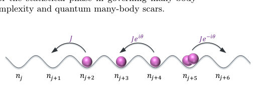
<figcaption class="paper-figure-caption"><b>Fig 1.</b> FIG. 1. Schematic illustration of the anyon-Hubbard model. The hopping amplitude depends on the particle occupation number of the left site.</figcaption>
</figure>
<figure class="paper-figure-card">
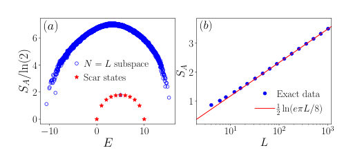
<figcaption class="paper-figure-caption"><b>Fig 2.</b> FIG. 2. Distribution and finite-size scaling of the entangle- ment entropy SA. (a) SA as a function of the eigenenergy E for L = 10. The blue open circles represent highly entangled states in the N = L subspace, while the red stars denote the exact scar states in the M = 0, 1, · · · , L subspace, with the circle-star symbol indicating the scar state that lies in the N = L subspace. (b) Scaling of SA of the scar states (circle- star symbols in (a)) at filling N/L = 1 as a function of the system size L. SA does not grow linearly with increasing L, but instead follows a logarithmic scaling relation. The red line shows the asymptotic analytical curve 1</figcaption>
</figure>
<figure class="paper-figure-card">
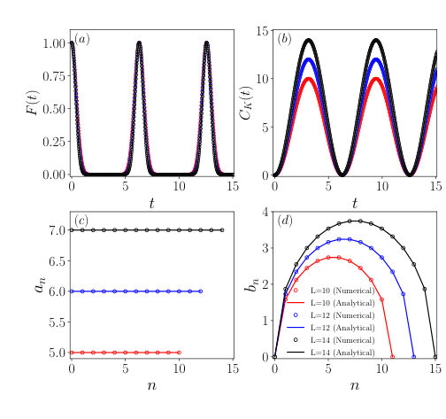
<figcaption class="paper-figure-caption"><b>Fig 3.</b> FIG. 3. Time evolution of scar states in Krylov space for dif- ferent lattice sizes L = 10, 12, 14. Panels (a) and (b) show the fidelity F(t) and Krylov complexity CK(t), respectively, while panels (c) and (d) display the Lanczos coefficients an and bn. Open circles denote the numerical results obtained from exact diagonalization, while solid lines represent the an- alytical predictions. The hopping amplitude and interaction strength are set to J = 1 and U = 1, respectively.</figcaption>
</figure>
<figure class="paper-figure-card">
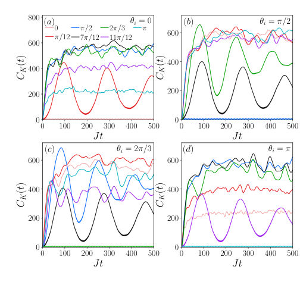
<figcaption class="paper-figure-caption"><b>Fig 4.</b> FIG. 4. Quench dynamics of the Krylov complexity CK(t). The four panels correspond to different initial-state statisti- cal phases: (a) θi = 0; (b) θi = π/2; (c) θi = 2π/3; and (d) θi = π. In each panel, the statistical phase is quenched to θf = sπ/12 (s = 0, 1, 6, 7, 8, 11, 12). In the absence of a quench, i.e., when θf = θi throughout the time evolution, CK(t) remains very small over long times and exhibits os- cillations, characteristic of perfect scar dynamics. When θf is close to θi, CK(t) increases with time while retaining pro- nounced oscillations, signaling approximate scar dynamics. The system size is L = 8, with J = 0.1 and U = 1.</figcaption>
</figure>
<figure class="paper-figure-card">
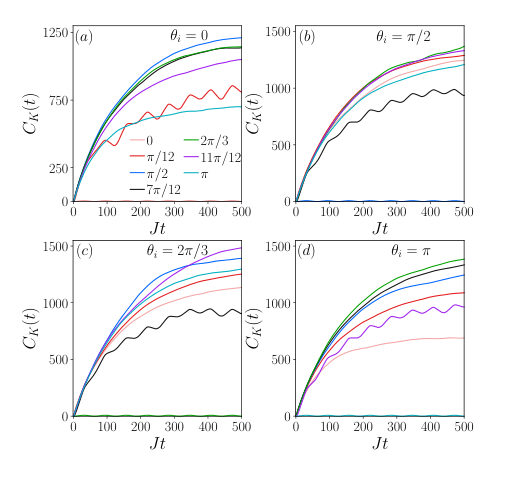
<figcaption class="paper-figure-caption"><b>Fig 5.</b> FIG. 5. Time evolution of the Krylov complexity CK(t) in the regime J = 10 and U = 1. Panels (a)-(d) cor- respond to the initial-state statistical phases θi = 0, π/2, 2π/3, and π, respectively. In each panel, the statistical phase of the post-quench Hamiltonian is set to θf = sπ/12 (s = 0, 1, 6, 7, 8, 11, 12). CK(t) increases over a short time scale and saturates to a high plateau for all quenches, except for the exact scar case without a quench, θf = θi. The system size is L = 8.</figcaption>
</figure>
</div>

<p><strong>Summary.</strong> The paper analyzes the anyon-Hubbard model to understand how fractional statistics influence quantum state complexity. Using Krylov complexity, the authors show that while scarred dynamics exhibit phase-independent revivals, quench dynamics are highly sensitive to the statistical phase and interaction strength. This highlights the central role of exotic statistics in governing many-body non-equilibrium behavior.</p>
<p><strong>Why it may be interesting.</strong> This work provides a sophisticated tool (Krylov complexity) to probe non-equilibrium dynamics in systems with exotic statistics, linking topological properties (anyons) directly to quantum information measures of complexity.</p>
<details>
<summary>Detailed structure</summary>
<p><strong>Main problem.</strong> The work investigates how anyonic statistics govern quantum-state complexity by studying the interplay between statistical phase and on-site interactions in the anyon-Hubbard model.</p>
<p><strong>Main result.</strong> Krylov complexity shows perfect periodic revivals during scarred dynamics, but its behavior after a quench depends critically on both the initial and final statistical phases and interaction strength.</p>
<p><strong>Method.</strong> The study employs Krylov complexity analysis ($C_K(t)$) and entanglement entropy ($S_A$) to characterize state spreading and distinguish between thermal and scar states in time evolution.</p>
<p><strong>Model / system.</strong> The system is modeled by the one-dimensional anyon-Hubbard model, characterized by a Hamiltonian involving hopping terms and an on-site interaction $U$, with statistical phase $   heta$ governing particle statistics (bosonic, fermionic, or fractional).</p>
<p><strong>Key observables.</strong> Krylov Complexity ($C_K(t)$), Entanglement Entropy ($S_A$), Fidelity ($F(t)$), and the saturation plateau value of complexity.</p>
<p><strong>Important parameters / regimes.</strong> Statistical phase ($    heta$), on-site interaction strength ($U$), hopping amplitude ($J$), and system size ($L$).</p>
<p><strong>Assumptions / limitations.</strong> The analysis involves constructing exact many-body scar eigenstates and analyzing dynamics in different regimes (strong vs. weak interaction).</p>
<p><strong>Figures summary.</strong> Figures illustrate the scaling of entanglement entropy for thermal versus scar states, and show time evolution plots of $C_K(t)$ confirming perfect revivals or saturation depending on quench parameters.</p>
<p><strong>Paper structure.</strong> The paper introduces the anyon-Hubbard model and its Hamiltonian. It then develops diagnostics like Krylov complexity and scar state construction. Key results are presented by analyzing dynamics under different conditions, such as no quench vs. quench, and varying interaction strengths.</p>
</details>
<details>
<summary>Abstract</summary>
<p>Anyons obey fractional statistics that lie between bosonic and fermionic statistics, giving rise to a broad range of intriguing phenomena. However, how anyonic statistics govern quantum-state complexity is still largely unexplored. In this work, we investigate the interplay between the statistical phase and on-site interactions in the anyon-Hubbard model, identifying exact quantum many-body scar eigenstates and novel quench dynamics. The Krylov complexity exhibits perfect periodic revivals independent of the statistical phase in the scarred dynamics, whereas after a quench it depends on both the statistical phase and the interaction strength. In the strong-interaction regime, we find approximate scarred dynamics, while in the weak-interaction regime the state spreads over Krylov space and the complexity ultimately saturates. Moreover, for the bosonic initial state, the complexity of fermions exhibits the lowest saturation value, and vice versa. For fractional statistics, the saturation plateau is minimized when the post-quench statistical phase is close to that of the initial state. Our results demonstrate the central role of the statistical phase in governing many-body dynamics and provide new insights into Krylov complexity and quantum many-body scars.</p>
</details>
<p><sub><a href="#top">↑ back to top</a></sub></p>

<p><a id="paper-2608.15806"></a></p>
<h3 id="longitudinal-field-driven-transition-in-a-non-integrable-non-hermitian-transverse-field-ising-chain-via-rbms"><a href="http://arxiv.org/abs/2608.15806v1">Longitudinal-Field-Driven Transition in a non-integrable Non-Hermitian Transverse-Field Ising Chain via RBMs</a></h3>
<p><strong>Authors:</strong> M. E. Ateuafack, M. R. Kamsap, J. T. Diffo, L. C. Fai, M. N. Jipdi<br>
<strong>Type:</strong> theory · <strong>Category:</strong> numerical methods · <strong>PDF:</strong> <a href="https://arxiv.org/pdf/2608.15806v1">https://arxiv.org/pdf/2608.15806v1</a><br>
<strong>Analysis basis:</strong> full PDF text, analyzed in chunks
<strong>Topic relevance:</strong> 🔥 <code>methods for driven-dissipative</code> <strong>4/5</strong> · <code>driven-dissipative phase transition</code> <strong>3/5</strong> · <code>Keldysh / 2PI / non-Gaussian methods</code> <strong>2/5</strong> · <code>non-equilibrium universality</code> <strong>2/5</strong> · <code>analog quantum simulation</code> <strong>1/5</strong> · <code>correlated / nonlocal dissipation</code> <strong>1/5</strong> · <code>quantum measurements</code> <strong>1/5</strong></p>
<div class="figure-strip-hint">↔ Scroll figures horizontally</div>
<div class="paper-figures-scroll">
<figure class="paper-figure-card">
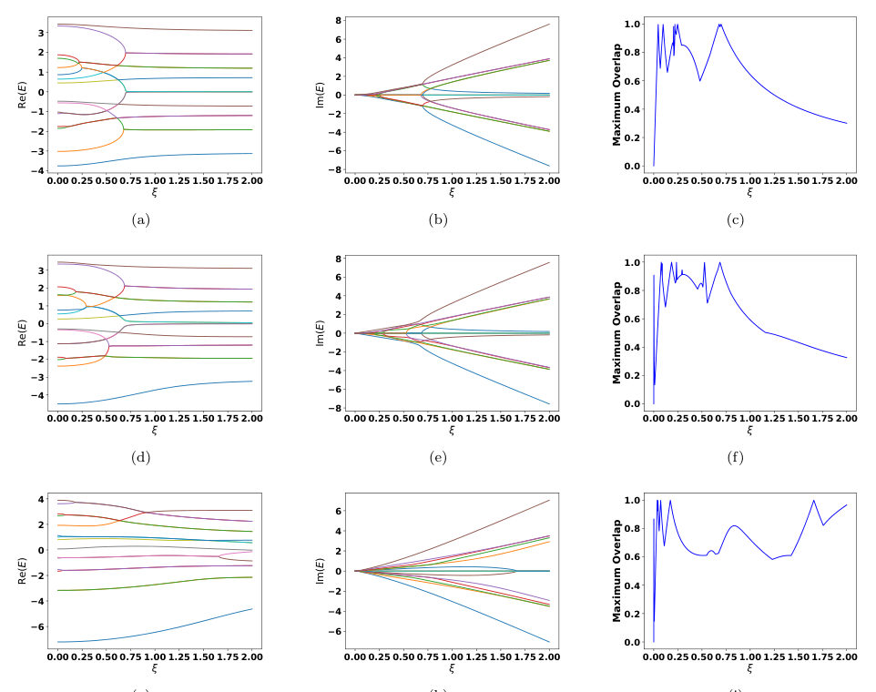
<figcaption class="paper-figure-caption"><b>Fig 1.</b> FIG. 1: Symmetry breaking and exceptional points obtained with the ED. Energy spectrum of the system for varying longitudinal fields h, illustrating the emergence of exceptional points (EPs). Columns display the real parts (a, d, g), imaginary parts (b, e, h), and the maximum overlap (c, f, i), respectively. Parameters are fixed at N = 4 and η = 0.5, with rows tracking field strengths of h = 0.1 (a–c), h = 0.3 (d–f), and h = 1.0 (g–i).</figcaption>
</figure>
<figure class="paper-figure-card">
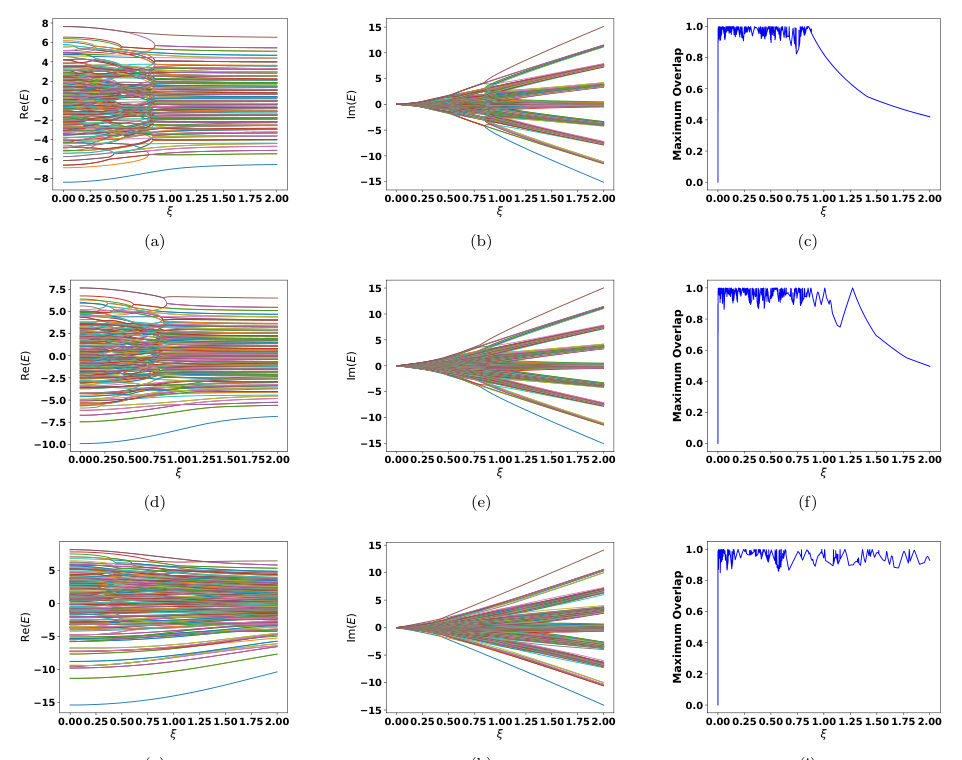
<figcaption class="paper-figure-caption"><b>Fig 2.</b> FIG. 2: Symmetry breaking and exceptional points. Energy spectrum of the system for varying longitudinal fields h, illustrating the emergence of exceptional points (EPs). Columns display the real parts (a, d, g), imaginary parts (b, e, h), and the maximum overlap (c, f, i), respectively. Parameters are fixed at N = 8 and η = 0.5, with rows tracking field strengths of h = 0.1 (a–c), h = 0.3 (d–f), and h = 1.0 (g–i). Band coloring corresponds to their chronological order of appearance.</figcaption>
</figure>
<figure class="paper-figure-card">
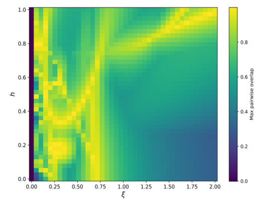
<figcaption class="paper-figure-caption"><b>Fig 3.</b> FIG. 3: Maximum-overlap phase diagram in the (h) −(ξ) parameter space. The yellow regions identify the parameter regimes where exceptional points (EPs) occur, characterized by the coalescence of eigenstates and a maximum overlap equal to unity. The remaining parameters are fixed at N = 4 and η = 0.5.</figcaption>
</figure>
<figure class="paper-figure-card">
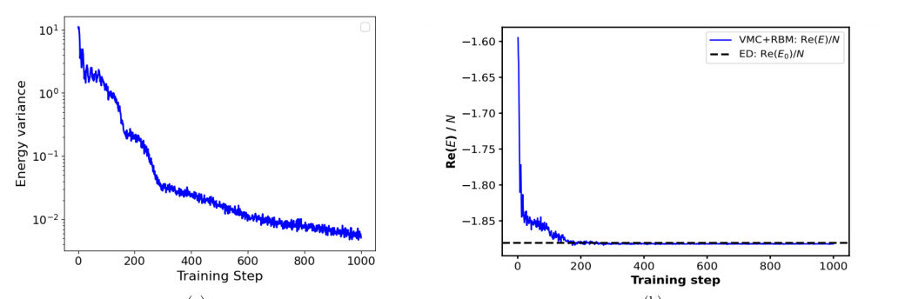
<figcaption class="paper-figure-caption"><b>Fig 4.</b> FIG. 4: RBM vs. exact diagonalisation. (a) Energy variance of the real part of the local energy, and (b) the corresponding ground-state energy of the system as a function of training steps. The Restricted Boltzmann Machine (RBM) successfully converges to the exact ground-state energy predicted by exact diagonalization (indicated by the black dashed line). The variance curve demonstrates that convergence initiates around 200 training steps. The fixed parameters for this simulation are N = 10 , η = 0.5, ξ = 0.05 and h = 0.1.</figcaption>
</figure>
<figure class="paper-figure-card">
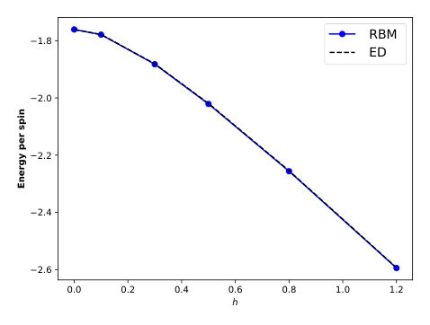
<figcaption class="paper-figure-caption"><b>Fig 5.</b> FIG. 6: ground state energy vs. h.The ground state energy provided by the RBM capture exactly ED architecture for different values of the longitudinal field h.Parameter of the simulation are N = 10 , η = 1.6,and ξ = 0.16.</figcaption>
</figure>
</div>

<p><strong>Summary.</strong> The authors apply Restricted Boltzmann Machines within a Variational Monte Carlo framework to study a non-Hermitian Ising chain. They successfully map out a longitudinal-field-driven quantum phase transition characterized by spontaneous PT-symmetry breaking and magnetic ordering. This establishes RBMs as an efficient tool for analyzing critical phenomena in complex, interacting open quantum systems.</p>
<p><strong>Why it may be interesting.</strong> This work demonstrates a powerful, scalable numerical technique (RBMs) to analyze complex non-Hermitian dynamics, which is highly relevant for open quantum systems where gain/loss mechanisms are present.</p>
<details>
<summary>Detailed structure</summary>
<p><strong>Main problem.</strong> Investigating the ground-state properties and quantum critical behavior of a non-Hermitian transverse-field Ising chain subjected to longitudinal and complex transverse magnetic fields.</p>
<p><strong>Main result.</strong> The RBM approach successfully characterizes the PT-symmetry-breaking transition and the emergence of magnetic order in this challenging, interacting non-Hermitian system.</p>
<p><strong>Method.</strong> The study employs real-valued neural quantum states (NQSs) based on Restricted Boltzmann Machines (RBMs), optimized using Variational Monte Carlo (VMC) sampling to tackle the many-body problem.</p>
<p><strong>Model / system.</strong> The model is a 1D non-Hermitian Transverse-Field Ising Chain governed by a Hamiltonian incorporating transverse, longitudinal ($h$), and complex transverse fields ($\xi$). The system becomes non-integrable due to the longitudinal field.</p>
<p><strong>Key observables.</strong> Ground-state energy (real part), magnetization ($M_z$), spin-spin correlation function ($C_{zz}(r)$), and detection of exceptional points (EPs).</p>
<p><strong>Important parameters / regimes.</strong> Longitudinal field strength ($h$) and the imaginary transverse field parameter ($\xi$). Critical transition occurs around $h_c \approx 0.3$.</p>
<p><strong>Assumptions / limitations.</strong> The use of RBMs as a variational ansatz to approximate the ground state, which is necessary because exact diagonalization fails for large systems.</p>
<p><strong>Figures summary.</strong> Figures show energy spectra revealing exceptional points (EPs) and track the evolution of the ground-state energy and magnetization across varying longitudinal fields ($h$), confirming phase transitions.</p>
<p><strong>Paper structure.</strong> The paper systematically analyzes the Hamiltonian, develops the RBM-VMC framework for non-Hermitian systems, benchmarks results against ED, and then maps out quantum phase transitions by tracking symmetry breaking (PT) and magnetic order using multiple observables like $C_{zz}(r)$.</p>
</details>
<details>
<summary>Abstract</summary>
<p>We investigate the ground-state properties and quantum critical behavior of a non-Hermitian transverse-field Ising chain subjected to longitudinal and complex transverse magnetic fields. To address this interacting many-body problem, we employ real-valued neural quantum states based on Restricted Boltzmann Machines (RBMs), optimized using Variational Monte Carlo (VMC) sampling. Spectral analysis of finite chains reveals exceptional points associated with spontaneous parity-time (PT) symmetry breaking. A real-valued RBM framework is developed to reconstruct the ground-state eigenstates of the non-Hermitian Hamiltonian. Benchmark comparisons with exact diagonalization demonstrate that the RBM approach accurately reproduces the ground-state energy, magnetization, and spin-spin correlations. Extending the analysis to larger system sizes, we identify a non-Hermitian quantum phase transition characterized by PT-symmetry breaking and the emergence of magnetic order. Our results establish real-valued neural quantum states as an efficient and scalable framework for investigating critical phenomena in interacting non-Hermitian quantum systems.</p>
</details>
<p><sub><a href="#top">↑ back to top</a></sub></p>

<p><a id="paper-2608.16171"></a></p>
<h3 id="rare-event-sampling-for-stochastic-dynamics-in-network-systems-using-cluster-updates"><a href="http://arxiv.org/abs/2608.16171v1">Rare-event sampling for stochastic dynamics in network systems using cluster updates</a></h3>
<p><strong>Authors:</strong> Jiazheng Sun, James Moody, Thomas Barthel<br>
<strong>Type:</strong> theory · <strong>Category:</strong> statistical mechanics · <strong>PDF:</strong> <a href="https://arxiv.org/pdf/2608.16171v1">https://arxiv.org/pdf/2608.16171v1</a><br>
<strong>Analysis basis:</strong> full PDF text, analyzed in chunks
<strong>Topic relevance:</strong> 🔥 <code>methods for driven-dissipative</code> <strong>4/5</strong> · <code>quantum measurements</code> <strong>3/5</strong> · <code>driven-dissipative phase transition</code> <strong>2/5</strong> · <code>non-equilibrium universality</code> <strong>2/5</strong> · <code>analog quantum simulation</code> <strong>1/5</strong> · <code>correlated / nonlocal dissipation</code> <strong>1/5</strong> · <code>scars &amp; prethermalization</code> <strong>1/5</strong></p>
<div class="figure-strip-hint">↔ Scroll figures horizontally</div>
<div class="paper-figures-scroll">
<figure class="paper-figure-card">
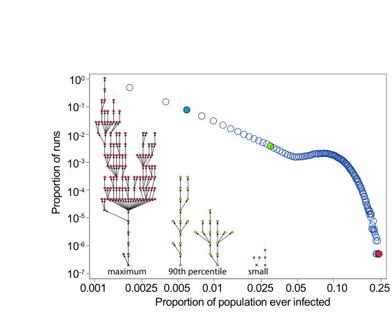
<figcaption class="paper-figure-caption"><b>Fig 1.</b> FIG. 1. Case study of epidemic outbreak sizes. For the real-world contact network of a village in rural India with N = 519 nodes (ver- tex degree average 9.7 and standard deviation 7.0) [43], we simulate a susceptible-infectious-recovered (SIR) model with synchronous up- dates, infection probability 0.015, and a fixed recovery time of 13 rounds (days). The figure shows the distribution of the outbreak sizes and exemplary transmission trees. In the vast majority of cases, the epidemic fades, reaching fewer than five households. In rare cases, however, the transmission proceeds to well-connected nodes which then spread to many, reaching more than 20% of the households.</figcaption>
</figure>
<figure class="paper-figure-card">
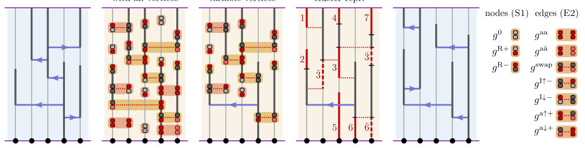
<figcaption class="paper-figure-caption"><b>Fig 2.</b> FIG. 2. Example for a cluster update in SIS dynamics. (a) A trajectory σ on five nodes with node 4 as patient zero and three infected nodes at the final time. (b) A compatible graph g. Vertices at state-changing events in σ are indicated by orange boxes and background vertices are indicated by red boxes. (c) To simplify cluster identification for the human eye, we have removed all vertices that ultimately have no free state. (d) Cluster representation of the graph g, where each red solid time segment with label “k” carries the state ak = 0, 1 of a free cluster Ck and each red dashed time segment with label “¯k” carries the negated state ¯ak = 1, 0 of cluster Ck. (e) Flipping the states of...</figcaption>
</figure>
<figure class="paper-figure-card">
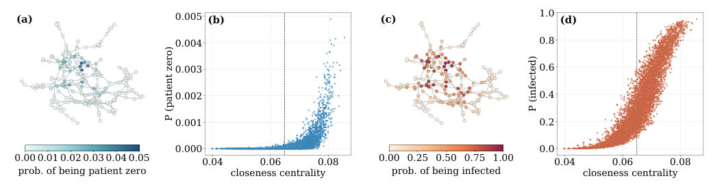
<figcaption class="paper-figure-caption"><b>Fig 3.</b> FIG. 3. Risk factor analysis for rare SIS outbreaks. CPMC samples SIS trajectories conditioned on a single infected node at t = 0 and outbreak size N I(T) ≥N I min, where N I(t) is the number of infected nodes. (a) The 185-node kinship network A, with nodes colored according to the probability p0 i [Eq. (7a)] of being patient zero. (b) p0 i versus the closeness centrality ci [Eq. (8)] for the 8623-node network B, each point representing one node. (c) Network A colored according to the probability pI i [Eq. (7b)] for getting infected during the outbreak. (d) pI i versus ci for network B. The model parameters are γ = 1 and (α, T, N I min) = (0.35, 10, 30) for network A [panels (a) and (c)]...</figcaption>
</figure>
<figure class="paper-figure-card">
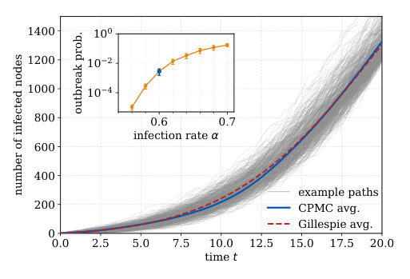
<figcaption class="paper-figure-caption"><b>Fig 4.</b> FIG. 4. Validation of CPMC against Gillespie simulations on the 8623-node kinship network. Gray curves show representative tra- jectories satisfying the outbreak condition N I(T) ≥N I min = 1200. The mean ⟨N I(t)⟩obtained from CPMC (solid blue) agrees well with the SSA Gillespie simulations (dashed red). Here γ = 1, α = 0.6, and T = 20. Inset: unconditioned outbreak probability Pr  N I(T) ≥N I min | N I(0) = 1  as a function of the infection rate. The blue point marks the rate used in the main panel. Error bars indicate one standard deviation, and results are averaged over 105 samples.</figcaption>
</figure>
</div>

<p><strong>Summary.</strong> This paper introduces Conditional-Path Monte Carlo (CPMC), an advanced simulation technique designed to overcome the severe inefficiencies of standard methods when studying rare events in stochastic network dynamics. By performing non-local updates across entire spacetime clusters, CPMC accurately samples trajectories that satisfy complex macroscopic constraints without suffering from vanishing acceptance rates. This provides a powerful tool for analyzing critical risk factors in fields ranging from epidemiology to finance.</p>
<p><strong>Why it may be interesting.</strong> While focused on classical stochastic processes, the methodology draws explicit inspiration from loop algorithms used in quantum Monte Carlo (QMC) for equilibrium physics. The development of a non-local update scheme that bypasses rejection sampling is highly relevant to simulating complex dynamics in many-body or open quantum systems where rare transitions are key.</p>
<details>
<summary>Detailed structure</summary>
<p><strong>Main problem.</strong> The central challenge is efficiently simulating stochastic evolution in complex networks when investigating rare macroscopic events, such as large-scale epidemic outbreaks or cascading failures.</p>
<p><strong>Main result.</strong> The proposed Conditional-Path Monte Carlo (CPMC) method successfully generates trajectories respecting hard macroscopic boundary conditions without suffering from the catastrophic rejection rates or critical slowing down inherent to standard simulation techniques.</p>
<p><strong>Method.</strong> CPMC is a novel rare-event sampling technique inspired by loop algorithms, employing non-local updates on spacetime clusters of the entire trajectory rather than step-by-step local integration.</p>
<p><strong>Model / system.</strong> The study focuses on stochastic dynamics modeled using the Susceptible-Infectious-Susceptible (SIS) model applied to complex network structures, such as kinship networks. The general framework applies to any system exhibiting rare, constrained macroscopic transitions.</p>
<p><strong>Key observables.</strong> Macroscopic boundary conditions (e.g., minimum outbreak size $N_{I}^{\min}$), conditional probabilities like the probability of being patient zero ($p_0^i$), and mean infection counts $\langle N_I(t) 
angle$.</p>
<p><strong>Important parameters / regimes.</strong> Infection rate ($\alpha$) relative to recovery/removal rates, network structure metrics like closeness centrality ($c_i$).</p>
<p><strong>Assumptions / limitations.</strong> The method assumes that the trajectory can be mapped effectively onto an intermediate graph configuration $g$ using Swendsen-Wang-like updates for cluster identification.</p>
<p><strong>Figures summary.</strong> Figure 1 motivates the work by showing rare, large outbreaks on a contact network. Figure 2 illustrates the core mechanism: mapping a trajectory $\sigma$ to a compatible graph $g$ and identifying spacetime clusters $\{C_k\}$. Figure 3 analyzes risk factors using centrality measures. Figure 4 compares mean infection counts from CPMC against standard SSA simulations.</p>
<p><strong>Paper structure.</strong> The paper first establishes the physical problem (rare events in networks) and critiques existing methods (Gillespie, TPS, etc.). It then introduces the theoretical framework of CPMC, detailing its non-local cluster updates. The bulk of the work applies this method to the SIS model on real-world networks, validating it by comparing results against known simulations and performing risk factor analysis.</p>
</details>
<details>
<summary>Abstract</summary>
<p>Understanding the stochastic evolution in complex networks is a central challenge across physics, biology, engineering, social science, and finance. The most consequential macroscopic events, like cascading failures in communication networks, widespread epidemic outbreaks, and rapid shifts in societal opinions, often emerge from a confluence of rare, localized stochastic processes and need to pass certain bottlenecks. Standard forward-time simulation algorithms like the Gillespie method are inefficient for the investigation of such phenomena due to catastrophic rejection rates. Advanced rare-event techniques like splitting methods and transition-path sampling often suffer from kinetic trapping, path degeneracy, genealogical correlations, or critical slowing down when applied to complex heterogeneous networks. We propose to overcome this challenge by establishing a novel technique called conditional-path Monte Carlo (CPMC), inspired by loop algorithms from equilibrium condensed-matter physics. By employing non-local updates on spacetime clusters without rejections, CPMC generates a Markov chain of trajectories that all strictly respect the targeted macroscopic boundary conditions like the occurrence of a massive network failure. We demonstrate the framework's potential by performing a simple risk factor analysis for rare large-scale epidemic outbreaks in SIS dynamics on kinship networks.</p>
</details>
<p><sub><a href="#top">↑ back to top</a></sub></p>

<p><a id="paper-2608.15739"></a></p>
<h3 id="tunable-statistics-induced-caging-in-the-anyon-hubbard-model"><a href="http://arxiv.org/abs/2608.15739v1">Tunable Statistics-Induced Caging in the Anyon-Hubbard Model</a></h3>
<p><strong>Authors:</strong> Zenong Zhou, Chaorong Guo, Hongzheng Wu, Qianglin Hu, Xiaobing Luo<br>
<strong>Type:</strong> theory · <strong>Category:</strong> other · <strong>PDF:</strong> <a href="https://arxiv.org/pdf/2608.15739v1">https://arxiv.org/pdf/2608.15739v1</a><br>
<strong>Analysis basis:</strong> full PDF text, analyzed in chunks
<strong>Topic relevance:</strong> 🔥 <code>analog quantum simulation</code> <strong>4/5</strong> · <code>methods for driven-dissipative</code> <strong>3/5</strong> · <code>driven-dissipative phase transition</code> <strong>2/5</strong> · <code>correlated / nonlocal dissipation</code> <strong>1/5</strong> · <code>non-equilibrium universality</code> <strong>1/5</strong> · <code>quantum measurements</code> <strong>1/5</strong> · <code>scars &amp; prethermalization</code> <strong>1/5</strong></p>
<div class="figure-strip-hint">↔ Scroll figures horizontally</div>
<div class="paper-figures-scroll">
<figure class="paper-figure-card">
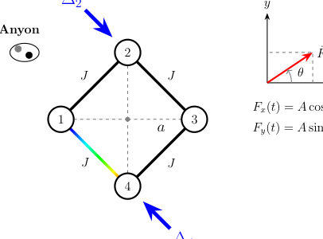
<figcaption class="paper-figure-caption"><b>Fig 1.</b> FIG. 1. Schematic of the diamond-shaped four-site plaque- tte with nearest-neighbor hopping amplitude J and center- to-vertex distance a. The top-left inset illustrates the two anyons. The link between sites 1 and 4, highlighted with a color gradient, represents the twisted boundary condition in- duced by the anyon-to-boson mapping. Blue arrows indicate the static energy detunings ∆2 and ∆4. The right inset de- fines the driving field ⃗F(t) with amplitude A, frequency ω, and polarization angle θ.</figcaption>
</figure>
<figure class="paper-figure-card">
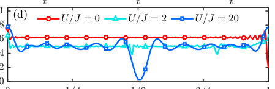
<figcaption class="paper-figure-caption"><b>Fig 2.</b> FIG. 2. Quantum dynamics of the target site occupation ⟨ˆn3(t)⟩governed by Eq. (7). (a)–(c) Real-time evolution for various statistical parameters κ at interaction strengths U/J = 0, 2, and 20, respectively. (d) Long-time-averaged oc- cupation ⟨ˆn3⟩as a function of κ. Here and in all subsequent figures, time t is expressed in units of ℏ/J, and the system is initially prepared with both particles localized at site 1, de- noted as |ψ(0)⟩= |1, 1⟩.</figcaption>
</figure>
<figure class="paper-figure-card">
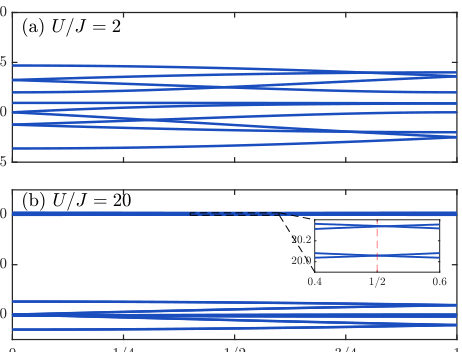
<figcaption class="paper-figure-caption"><b>Fig 3.</b> FIG. 3. Energy spectra of the undriven two-anyon system governed by ˆHstatic as a function of the statistical parameter κ for interaction strengths (a) U/J = 2 and (b) U/J = 20. In (b), the energy levels separate into a lower scattering mani- fold and an upper doublon band. The inset resolves the fine structure of the doublon band, revealing an exact degeneracy at κ = 1/2 (red dashed line).</figcaption>
</figure>
<figure class="paper-figure-card">
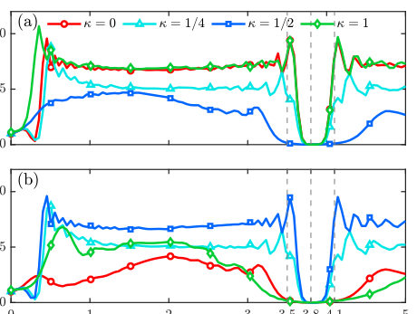
<figcaption class="paper-figure-caption"><b>Fig 4.</b> FIG. 5. Long-time-averaged occupation ⟨ˆn3⟩governed by ˆHB AHM(t) [Eqs. (6) and (20)] as a function of the dimensionless driving strength Aa/ω at U/J = 2 and ω/J = 40. Results are shown for polarization angles (a) θ = 0 and (b) θ = π/8. The κ-dependent dips within the range Aa/ω ∈[3.5, 4.1], marked by vertical dashed lines, signify dynamical caging, while the κ-independent dip at Aa/ω ≈3.8 corresponds to coherent de- struction of tunneling (CDT).</figcaption>
</figure>
<figure class="paper-figure-card">
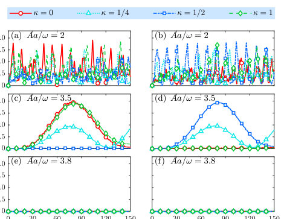
<figcaption class="paper-figure-caption"><b>Fig 5.</b> FIG. 4. Quantum dynamics of the target site occupation ⟨ˆn3(t)⟩governed by ˆHB AHM(t) [Eqs. (6) and (20)]. The real-time evolution is calculated for an interaction strength U/J = 2, a driving frequency ω/J = 40, and static detun- ings ∆2 = ∆4 = ω. Results are displayed for dimensionless driving amplitudes Aa/ω = 2 [(a), (b)], 3.5 [(c), (d)], and 3.8 [(e), (f)]. The left and right columns correspond to polariza- tion angles θ = 0 and θ = π/8, respectively. Different curves within each panel represent various statistical parameters κ.</figcaption>
</figure>
</div>

<p><strong>Summary.</strong> The paper explores tunable statistics-induced caging in the Anyon-Hubbard Model by applying Floquet engineering. It shows that while intrinsic interactions can cause caging only under specific conditions (strong coupling), external high-frequency driving can dynamically restore this effect even when interactions are weak. This provides a powerful tool for selectively controlling anyonic behavior based on their underlying statistical phase.</p>
<p><strong>Why it may be interesting.</strong> This work directly addresses coherent control of quantum many-body states using time-periodic driving, a central theme in AMO physics and open quantum systems research.</p>
<details>
<summary>Detailed structure</summary>
<p><strong>Main problem.</strong> The study investigates how quantum statistics can induce a controllable 'caging' effect for interacting anyons within the Anyon-Hubbard Model.</p>
<p><strong>Main result.</strong> Dynamical control via Floquet engineering allows the restoration of this caging effect into the weakly interacting regime, enabling selective manipulation based on the statistical phase ($\kappa$).</p>
<p><strong>Method.</strong> The analysis employs mapping to a Bose-Hubbard model and utilizes high-frequency expansion methods (Floquet theory) combined with perturbation theory to derive effective Hamiltonians.</p>
<p><strong>Model / system.</strong> The system is the Anyon-Hubbard Model on a four-site plaquette, which is exactly mapped to a Bose-Hubbard type Hamiltonian. The dynamics are governed by time-dependent Schrödinger equations solved via Floquet engineering techniques.</p>
<p><strong>Key observables.</strong> Target site occupation $\langle \hat{n}_3(t) 
angle$ and its long-time average $\langle \hat{n}_3 
angle$, which quantifies the degree of caging (suppression to zero).</p>
<p><strong>Important parameters / regimes.</strong> Statistical phase ($\kappa$), hopping amplitude ($J$), interaction strength ($U$), and external drive parameters (amplitude $A$, frequency $\omega$, polarization angle $ heta$).</p>
<p><strong>Assumptions / limitations.</strong> The analysis relies on mapping the anyonic system to a bosonic model and employing high-frequency approximations for the time evolution.</p>
<p><strong>Figures summary.</strong> Figures illustrate the suppression of site occupation ($\langle \hat{n}_3 
angle$) showing caging at specific parameter points, comparing results from effective Hamiltonians against full time-dependent simulations.</p>
<p><strong>Paper structure.</strong> The paper progresses by first establishing static caging in the strong interaction limit, then demonstrating its breakdown in weak coupling. The core contribution involves using Floquet engineering to dynamically restore this caging across all statistical regimes via an effective Hamiltonian approach.</p>
</details>
<details>
<summary>Abstract</summary>
<p>We study the quantum dynamics of two interacting anyons in the Anyon-Hubbard model on a four-site plaquette, a system that is exactly mappable to a Bose-Hubbard model. We reveal that static Aharonov-Bohm (AB) caging, induced by only specific statistical phases, emerges in the strongly interacting limit but breaks down under weak interparticle interactions. To address this, we demonstrate that statistical-factor-induced AB caging can be dynamically restored via Floquet engineering. This dynamical mechanism, governed by the synthetic Floquet flux and the anyonic statistical phase, extends the caging effect into the weakly interacting regime across the full spectrum of statistical phases. Furthermore, we show that the external drive enables the selective caging of anyons, providing an efficient approach for manipulating anyons and identifying statistical phases.</p>
</details>
<p><sub><a href="#top">↑ back to top</a></sub></p>

<p><a id="paper-2608.15795"></a></p>
<h3 id="experimental-high-dimensional-quantum-overlapping-tomography"><a href="http://arxiv.org/abs/2608.15795v1">Experimental High-Dimensional Quantum Overlapping Tomography</a></h3>
<p><strong>Authors:</strong> Haifei Wang, Rui Qu, Zhengning Yang, Xiaodan Lyu, Haotao Zhu, Zitong Xu, Lianzhen Cao, Joel Yang, Otfried Gühne, Weibo Gao<br>
<strong>Type:</strong> experiment · <strong>Category:</strong> quantum information and computing · <strong>PDF:</strong> <a href="https://arxiv.org/pdf/2608.15795v1">https://arxiv.org/pdf/2608.15795v1</a><br>
<strong>Analysis basis:</strong> full PDF text, analyzed in chunks
<strong>Topic relevance:</strong> 🔥 <code>QC/QI experiment</code> <strong>4/5</strong> · <code>quantum measurements</code> <strong>3/5</strong> · <code>quantum optics experiment</code> <strong>3/5</strong> · <code>analog quantum simulation</code> <strong>1/5</strong> · <code>interference shaping light</code> <strong>1/5</strong></p>
<div class="figure-strip-hint">↔ Scroll figures horizontally</div>
<div class="paper-figures-scroll">
<figure class="paper-figure-card">
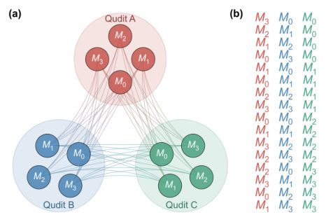
<figcaption class="paper-figure-caption"><b>Fig 1.</b> FIG. 1. Schematic for high-dimensional overlapping tomography. (a) Complete multipartite graph K4,4,4 for three qutrits, where each qutrit is associated with four vertices representing its MUB settings M0, M1, M2, M3. Edges repre- sent tensor products of two MUB projectors. Cliques (trian- gles) correspond to three-body measurement settings (tensor products of three MUB projectors). (b) The 16 cliques that cover all 48 edges of the graph. The corresponding MUB settings are thus informationally complete for extracting all two-body marginals.</figcaption>
</figure>
<figure class="paper-figure-card">
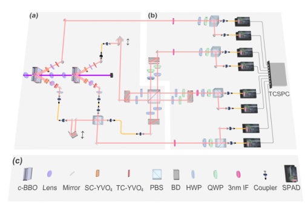
<figcaption class="paper-figure-caption"><b>Fig 2.</b> FIG. 2. Experimental setup. (a) Preparation of the target state |Λ⟩. Ultraviolet femtosecond pulses (390 nm, 80 MHz repetition rate, 230 mW average power) are focused onto two sandwich-like BBO–HWP–BBO combinations (c-BBO) to generate two polarization-entangled photon pairs at 780 nm via spontaneous parametric down-conversion. Spatial and temporal walk-off in the BBO crystals is compensated by yt- trium orthovanadate (YVO4) crystals. The BDs displace ver- tically polarized photons into the upper path while leaving horizontally polarized photons in the lower path. Narrow- band interference filters (IF) with a 3 nm passband are used to suppress unwanted frequency correlations between the sig-...</figcaption>
</figure>
<figure class="paper-figure-card">
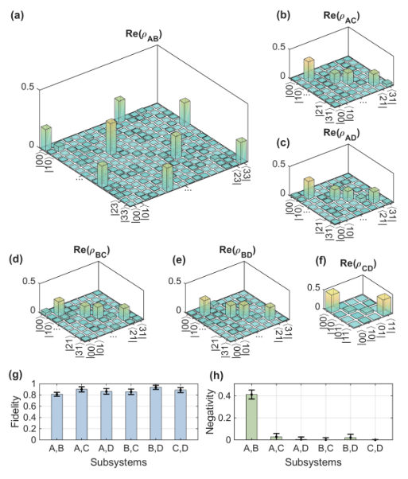
<figcaption class="paper-figure-caption"><b>Fig 3.</b> FIG. 3. Experimental results of high-dimensional overlapping tomography. (a-f) Real parts of the six two-body marginals reconstructed by high-dimensional overlapping tomography. (g) The fidelities of the six two-body marginals. Error bars are obtained by Monte Carlo sampling with 1000 samples fol- lowing Poisson distribution and represent 99% confidence in- tervals. (h) Negativities of the two-body marginals. Only ρAB has a non-zero negativity with statistical significance, indicat- ing its entanglement, whereas the other two-body marginals do not.</figcaption>
</figure>
<figure class="paper-figure-card">
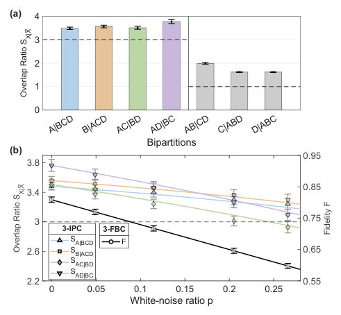
<figcaption class="paper-figure-caption"><b>Fig 4.</b> FIG. 4. Certification of the entanglement dimensionality vec- tor. (a) The global-to-local overlap ratios S for all seven bipartitions. Error bars represent one standard deviation. These values lower-bound the Schmidt number vector of our experimental state as rA|BCD, rB|ACD, rAC|BD, rAD|BC &gt; 3 and rAB|CD, rC|ABD, rD|ABC &gt; 1. (b) Comparison between the r-inner-product criterion (r-IPC) and the r-fidelity-based criterion (r-FBC) for detecting the Schmidt number greater than r, under different levels of white noise. Here p is the ratio of the additional white noise sample counts to the total sample counts, obtained from postprocessing.</figcaption>
</figure>
</div>

<p><strong>Summary.</strong> This work introduces High-Dimensional Quantum Overlapping Tomography (QOT) to overcome the measurement complexity barrier in characterizing large, high-dimensional quantum states. Experimentally realized with photons, it efficiently reconstructs crucial two-body marginals using far fewer measurements than standard methods. The findings establish a scalable framework and demonstrate that this approach offers superior noise resilience for certifying multipartite entanglement.</p>
<p><strong>Why it may be interesting.</strong> The development of scalable tomography techniques is crucial for validating quantum network components and understanding complex multi-partite correlations in high-dimensional photonic systems.</p>
<details>
<summary>Detailed structure</summary>
<p><strong>Main problem.</strong> Characterizing large-scale, high-dimensional multipartite quantum systems is computationally prohibitive due to increasing local dimensionality and particle number.</p>
<p><strong>Main result.</strong> The authors successfully demonstrated a scalable technique using High-Dimensional Quantum Overlapping Tomography (QOT) that reconstructs all two-body marginals with significantly fewer measurements than independent tomography. Furthermore, they showed this method provides more noise-resilient entanglement certification than fidelity-based criteria.</p>
<p><strong>Method.</strong> They propose and experimentally implement QOT based on a graph-theoretic formulation, utilizing mutually unbiased bases (MUBs) to efficiently cover the necessary measurement settings required for marginal reconstruction.</p>
<p><strong>Model / system.</strong> The experiment was performed on a photonic four-party entangled state in a $4 	imes 4 	imes 2 	imes 2$ system. The theoretical framework applies to general multipartite high-dimensional quantum systems.</p>
<p><strong>Key observables.</strong> Two-body marginals ($
ho_{XY}$), reconstruction fidelity ($0.876 \pm 0.014$), negativity, and global-to-local overlap ratios ($S$).</p>
<p><strong>Important parameters / regimes.</strong> The number of measurement settings required (25 vs. 94/225 for full tomography); the noise parameter $p$ used in simulating white noise contamination.</p>
<p><strong>Assumptions / limitations.</strong> The theoretical formulation is simplified for prime-power dimensions and relies on MUB measurements; entanglement certification comparisons assume a depolarizing channel model.</p>
<p><strong>Figures summary.</strong> Figures illustrate the experimental setup using photonics, schematics of the underlying complete multipartite graph, reconstructed marginals (real parts, fidelities, negativities), and a comparison of entanglement criteria under noise.</p>
<p><strong>Paper structure.</strong> The paper introduces the problem of high-dimensional characterization, details the graph-theoretic QOT approach, presents the experimental realization on photonic states using MUB measurements, analyzes the reconstructed marginals for structure (e.g., layered entanglement), and concludes by comparing different entanglement certification methods under noise.</p>
</details>
<details>
<summary>Abstract</summary>
<p>Large-scale quantum systems have advanced rapidly via the exploration of more particles and higher dimensions, offering great potential for developing quantum technologies. However, their characterization becomes prohibitive with increasing local dimensionality and particle number. Here we propose high-dimensional quantum overlapping tomography based on a graph-theoretic formulation, which allows one to efficiently reconstruct few-body marginals of multipartite high-dimensional quantum systems. We experimentally realize it on a photonic four-party entangled state in a $4 \times 4 \times 2 \times 2$ system. Using measurements in mutually unbiased bases, we reconstruct all six two-body marginals with only 25 projective measurement settings, compared with 94 and 225 settings for independent tomography of all two-body reduced states and full state tomography, respectively. The reconstructed marginals reveal a layered entanglement structure vital for high-dimensional quantum networks. We further show that these marginals enable more noise-resilient certification of multipartite high-dimensional entanglement than the fidelity-based criterion. Our work thus offers a scalable route for learning multidimensional quantum systems.</p>
</details>
<p><sub><a href="#top">↑ back to top</a></sub></p>

<p><a id="paper-2608.15715"></a></p>
<h3 id="continuous-quantum-feedback-control-via-kraus-parameterized-belief-reinforcement-learning"><a href="http://arxiv.org/abs/2608.15715v1">Continuous Quantum Feedback Control via Kraus-Parameterized Belief Reinforcement Learning</a></h3>
<p><strong>Authors:</strong> Priyanshi Singh, Krishna Bhatia<br>
<strong>Type:</strong> theory · <strong>Category:</strong> quantum information and computing · <strong>PDF:</strong> <a href="https://arxiv.org/pdf/2608.15715v1">https://arxiv.org/pdf/2608.15715v1</a><br>
<strong>Analysis basis:</strong> full PDF text, analyzed in chunks
<strong>Topic relevance:</strong> 🔥 <code>quantum measurements</code> <strong>4/5</strong> · <code>methods for driven-dissipative</code> <strong>3/5</strong> · <code>driven-dissipative phase transition</code> <strong>2/5</strong> · <code>Keldysh / 2PI / non-Gaussian methods</code> <strong>1/5</strong> · <code>correlated / nonlocal dissipation</code> <strong>1/5</strong></p>
<div class="figure-strip-hint">↔ Scroll figures horizontally</div>
<div class="paper-figures-scroll">
<figure class="paper-figure-card">
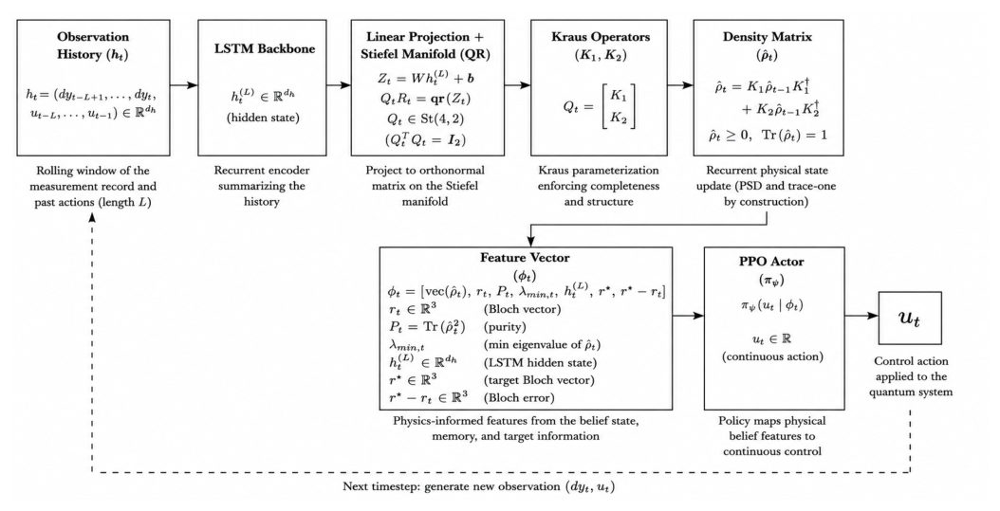
<figcaption class="paper-figure-caption"><b>Fig 1.</b> Fig. 1. Kraus-belief PPO pipeline. The observation history ht passes through a frozen pretrained Kraus encoder (via a Stiefel manifold projection) to produce a physically valid density-matrix belief ˆρt. Explicit physical features ϕt are then passed to the PPO actor. The LSTM baseline replaces this entire belief stage with a plain recurrent encoder.</figcaption>
</figure>
</div>

<p><strong>Summary.</strong> The paper introduces Kraus-Parameterized Belief Reinforcement Learning for controlling open quantum systems based only on noisy measurements. By constraining the learned belief state ($\hat{
ho}_t$) to maintain physical validity (PSD and trace normalization), the method ensures reliable control policies. This approach proves more stable than standard deep learning baselines, particularly when system dynamics change unexpectedly.</p>
<p><strong>Why it may be interesting.</strong> This work directly addresses the practical implementation gap in quantum control theory by embedding fundamental physical constraints (like PSD) into the learning architecture, making RL policies applicable to real-world open quantum systems.</p>
<details>
<summary>Detailed structure</summary>
<p><strong>Main problem.</strong> The core challenge is achieving continuous quantum feedback control when only noisy measurement records are available, without direct access to the true underlying quantum state.</p>
<p><strong>Main result.</strong> The proposed Kraus-Belief PPO method achieves stable feedback control with significantly lower return variance than unconstrained baselines, especially under out-of-distribution conditions.</p>
<p><strong>Method.</strong> It uses a two-stage pipeline: a Kraus-constrained recurrent encoder estimates the density matrix ($\hat{
ho}_t$), which is then fed into a Proximal Policy Optimization (PPO) actor for action selection.</p>
<p><strong>Model / system.</strong> The system modeled is a continuously monitored open quantum qubit, whose dynamics are governed by a stochastic master equation. Control involves applying a continuous scalar field $u_t$ to steer the state towards a target pure state $
ho^\star$.</p>
<p><strong>Key observables.</strong> Measurement-conditioned belief fidelity ($\sim 0.77–0.80$), return variance, mean episodic return, and physical validity metrics (PSD check, trace error).</p>
<p><strong>Important parameters / regimes.</strong> Control action bounds ($u_t \in [-4, 4]$), measurement efficiency ($\eta$), and the PPO hyperparameters.</p>
<p><strong>Assumptions / limitations.</strong> The primary assumption is that enforcing physics-informed neural memory via the Kraus constraint acts as a practical inductive bias for reliable quantum feedback control.</p>
<p><strong>Figures summary.</strong> Figure 1 illustrates the comparison between the Kraus-belief PPO pipeline and the LSTM baseline, highlighting how the Stiefel manifold projection enforces physical state constraints.</p>
<p><strong>Paper structure.</strong> The paper defines the problem in terms of a POMDP, proposes the two-stage Kraus-Belief PPO method (encoder pretraining followed by RL control), compares it against an unconstrained LSTM baseline across nominal and OOD conditions, and analyzes performance metrics like variance stability.</p>
</details>
<details>
<summary>Abstract</summary>
<p>Quantum feedback control requires acting on noisy continuous measurement records without direct access to the underlying quantum state. We propose Kraus-Parameterized Belief Reinforcement Learning, a pipeline in which a recurrent encoder, constrained to the Stiefel manifold, produces density-matrix estimates that are guaranteed positive-semidefinite and trace-normalized by construction, embedding quantum state geometry directly into the learning loop. A Proximal Policy Optimization (PPO) actor then maps these physically valid belief states to continuous control actions. On a simulated continuously monitored qubit, the resulting policy achieves stable feedback control, maintaining a measurement-conditioned belief fidelity of approximately 0.77-0.80 and exhibiting substantially lower return variance than a parameter-matched LSTM-history baseline across both nominal and out-of-distribution conditions. Although gains in raw target fidelity are modest, the geometric constraint guarantees a physically valid, interpretable belief representation and yields markedly more stable control under measurement inefficiency and abrupt dynamics switches. These results indicate that physics-informed neural memory is a practical inductive bias for reliable quantum feedback control.</p>
</details>
<p><sub><a href="#top">↑ back to top</a></sub></p>

<p><a id="paper-2608.16358"></a></p>
<h3 id="negative-quasiprobability-trajectories-for-bell-diagonal-states-under-local-decoherence"><a href="http://arxiv.org/abs/2608.16358v1">Negative quasiprobability trajectories for Bell-diagonal states under local decoherence</a></h3>
<p><strong>Authors:</strong> Qing Yu, Kun Zhang, Yang-Yang Chen, Xiao-Hui Wang<br>
<strong>Type:</strong> theory · <strong>Category:</strong> quantum information and computing · <strong>PDF:</strong> <a href="https://arxiv.org/pdf/2608.16358v1">https://arxiv.org/pdf/2608.16358v1</a><br>
<strong>Analysis basis:</strong> full PDF text, analyzed in chunks
<strong>Topic relevance:</strong> 🔥 <code>quantum measurements</code> <strong>4/5</strong> · <code>methods for driven-dissipative</code> <strong>3/5</strong> · <code>driven-dissipative phase transition</code> <strong>2/5</strong> · <code>Keldysh / 2PI / non-Gaussian methods</code> <strong>1/5</strong> · <code>correlated / nonlocal dissipation</code> <strong>1/5</strong></p>
<div class="figure-strip-hint">↔ Scroll figures horizontally</div>
<div class="paper-figures-scroll">
<figure class="paper-figure-card">
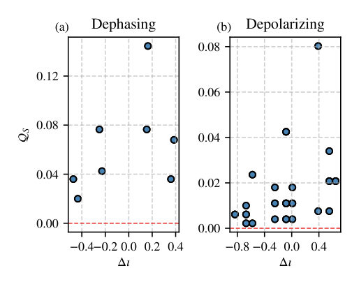
<figcaption class="paper-figure-caption"><b>Fig 1.</b> FIG. 1. The quasiprobability distribution QS[γ] of stochastic mutual information change ∆ι[γ] for initial Bell-diagonal states with corre- lation coefficients c1 = −0.3, c2 = −0.1, and c3 = −0.3. The dynamics of each qubit is described by (a) dephasing with λ = 0.6 and (b) depolarization with η = 7/15. The red dashed line marks zero.</figcaption>
</figure>
<figure class="paper-figure-card">
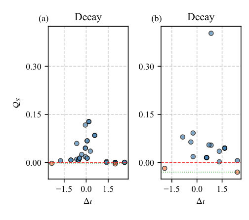
<figcaption class="paper-figure-caption"><b>Fig 2.</b> FIG. 2. The reduced KD quasiprobability distribution QS[γ] of the stochastic mutual information change ∆ι[γ] for Bell-diagonal states under local amplitude damping. In both panels, the damping param- eter is µ = 0.4. Orange points identify negative trajectory weights, and the green dotted line in each panel marks the corresponding minimum trajectory weight. Panel (a) uses the representative state c1 = c3 = −0.3 and c2 = −0.1. Panel (b) uses the v &gt; 0 minimiz- ing family in Theorem 2, with c3 = 1 and c1 = −c2 ≃0.49201.</figcaption>
</figure>
<figure class="paper-figure-card">
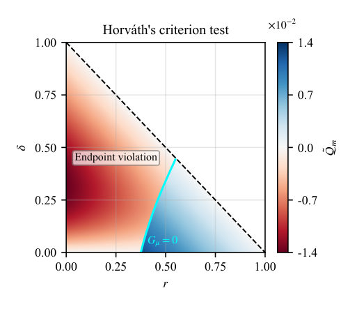
<figcaption class="paper-figure-caption"><b>Fig 3.</b> FIG. 3. Grouped quasiprobability weight ˜Qm at the smallest support value of ∆ι[γ] in the (r, δ) plane for the structured parameters in Eq. (65) with µ = 0.2. Red and blue denote negative and positive values, respectively. The cyan curve is the boundary Gµ(r, δ) = 0. The analytic endpoint-violation region is defined by Gµ(r, δ) &gt; 0. Only the physical region 0 &lt; r &lt; 1 −δ is considered.</figcaption>
</figure>
</div>

<p><strong>Summary.</strong> This paper analyzes how quantum information changes during local decoherence by examining quasiprobability trajectories. It demonstrates that these distributions can exhibit negative weights, leading to violations of certain mathematical criteria (Horváth's criterion). This highlights a fundamental difference between the full quantum trajectory description and what is observable only through average measurements.</p>
<p><strong>Why it may be interesting.</strong> This work provides a rigorous, trajectory-level diagnostic tool that distinguishes quantum dynamics from classical stochastic processes, which is crucial for understanding open quantum systems beyond simple average measurements.</p>
<details>
<summary>Detailed structure</summary>
<p><strong>Main problem.</strong> The study investigates negative quasiprobability trajectories for Bell-diagonal quantum states undergoing local decoherence, contrasting trajectory-level dynamics with average-level inequalities.</p>
<p><strong>Main result.</strong> Negative quasiprobabilities can violate Horváth's criterion for the Jensen-Steffensen inequality to hold, revealing a unique feature of quantum information dynamics invisible when only average quantities are considered.</p>
<p><strong>Method.</strong> The authors use quasiprobability trajectories (Kirkwood-Dirac distribution) derived from fluctuation theorems applied to quantum mutual information change ($\Delta I$).</p>
<p><strong>Model / system.</strong> The system consists of two qubits initialized in Bell-diagonal states and subjected to local decoherence channels, including dephasing, depolarizing, and amplitude damping.</p>
<p><strong>Key observables.</strong> Quantum Mutual Information change ($\Delta I$), stochastic mutual information change ($\Delta\iota[\gamma]$), and the negativity of the quasiprobability distribution $Q[	ilde{\gamma}]$.</p>
<p><strong>Important parameters / regimes.</strong> Decoherence parameters such as $\lambda$ (dephasing) or $\eta$ (depolarizing noise); the analysis also depends on initial state populations ($p_k$) and environmental coupling strengths ($\mu$).</p>
<p><strong>Assumptions / limitations.</strong> The use of the Kirkwood-Dirac quasiprobability distribution is necessary because spectral projectors for global and local states do not commute due to entanglement.</p>
<p><strong>Figures summary.</strong> Figure 1 illustrates that for initial Bell-diagonal states under dephasing or depolarization, the reduced trajectory weights $Q_S[\gamma]$ remain non-negative relative to the zero line.</p>
<p><strong>Paper structure.</strong> The paper establishes the framework using fluctuation theorems and quasiprobabilities. It then analyzes specific decoherence channels (dephasing/depolarizing) showing non-negativity in reduced distributions, before focusing on amplitude damping to analytically determine minimum support values and prove the violation of Horváth's criterion.</p>
</details>
<details>
<summary>Abstract</summary>
<p>The fluctuation theorem (FT) relates microscopic trajectory distributions to macroscopic averages. Using quasiprobability trajectories, this framework has recently been extended to quantum information dynamics. Despite sharing the form of conventional thermodynamic FTs, information FTs involve quasiprobabilities whose negativity and statistical properties remain poorly understood. We analytically determine the properties of negative distributions based on the two-qubit Bell-diagonal states evolving under local dephasing, depolarizing, and amplitude-damping channels. We show that the occurrence of negative quasiprobabilities is not determined by the entanglement or Bell nonlocality of the initial state. Instead, a diagonal-interference decomposition of the transition quasiprobability provides a sufficient condition for negativity. More importantly, we prove that quasiprobability distributions containing negative weights can violate Horváth's necessary and sufficient criterion for the Jensen-Steffensen inequality to hold for every continuous convex function, even though the specific exponential Jensen-like relation enforced by the FT and the quantum data-processing inequality remains valid. This trajectory-level contrast with classical stochastic descriptions reveals a distinctive feature of quantum information dynamics that is invisible when only the corresponding average-level information inequalities are considered.</p>
</details>
<p><sub><a href="#top">↑ back to top</a></sub></p>

<p><a id="paper-2608.15993"></a></p>
<h3 id="resolving-and-resetting-the-charge-environment-of-single-t-centers-in-silicon-p-i-n-waveguides"><a href="http://arxiv.org/abs/2608.15993v1">Resolving and resetting the charge environment of single T-centers in silicon p-i-n waveguides</a></h3>
<p><strong>Authors:</strong> Chaoshen Zhang, Hanbin Song, Lukasz Komza, Aaron M. Day, Enrique Garcia, Donald Witt, Mihir K. Bhaskar, Alp Sipahigil, Evelyn L. Hu<br>
<strong>Type:</strong> experiment · <strong>Category:</strong> quantum information and computing · <strong>PDF:</strong> <a href="https://arxiv.org/pdf/2608.15993v1">https://arxiv.org/pdf/2608.15993v1</a><br>
<strong>Analysis basis:</strong> full PDF text, analyzed in chunks
<strong>Topic relevance:</strong> 🔥 <code>QC/QI experiment</code> <strong>4/5</strong> · <code>quantum optics experiment</code> <strong>3/5</strong> · <code>quantum measurements</code> <strong>2/5</strong> · <code>correlated / nonlocal dissipation</code> <strong>1/5</strong> · <code>interference shaping light</code> <strong>1/5</strong></p>
<div class="figure-strip-hint">↔ Scroll figures horizontally</div>
<div class="paper-figures-scroll">
<figure class="paper-figure-card">
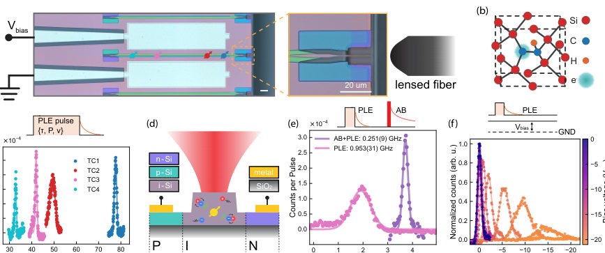
<figcaption class="paper-figure-caption"><b>Fig 1.</b> Fig. 1: Electrical and optical control of individual T-centers (a) Optical micrograph of the device (true color). The partially etched ridge waveguide crosses the 7 µm intrinsic gap of a lateral p–i–n junction, giving the biased electrodes continuous field access to emitters along the device. Colored markers indicate the four T-centers (TC1–4) studied here. Photons are collected through a fully etched and released inverse taper at the right-hand facet (inset) into a lensed single-mode fiber, with a Bragg grating at the left end back-reflecting into the same path. Scale bars: 20 µm. (b) Atomic structure of a T-center. (c) Pulse sequence for PLE measurement; the exponential tail indicates the...</figcaption>
</figure>
<figure class="paper-figure-card">
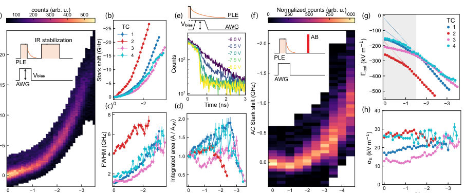
<figcaption class="paper-figure-caption"><b>Fig 2.</b> Fig. 2: Electric-field tuning and charge-noise readout with pulsed biasing In (a)–(e) the junction is driven by a square wave with an off-resonant (1325 nm) IR stabilization pulse at 0 V; (f) replaces the IR stabilization pulse with an (640 nm) AB reset pulse. (a) AWG-bias pulse sequence (inset) and voltage-resolved PLE spectrogram of TC3: the ZPL shifts parabolically and broadens with |V |. (b) Relative Stark shift for TC1–4. (c) Gaussian-fit linewidth for TC1– 4, steadily increasing with |V |. (d) Normalized integrated area for TC1–4: all show initial rise (with TC1 approaching 1.9 times original area near −2.5 V) followed by a sharp decrease at high bias (ionization). (e) Ramped-bias...</figcaption>
</figure>
<figure class="paper-figure-card">
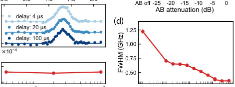
<figcaption class="paper-figure-caption"><b>Fig 3.</b> Fig. 3: Above-band pulse-parameter dependence (a) AB-PLE pulse sequence, real time span not to scale. (b) TC1 AB-PLE spectra versus AB-probe delay (background subtracted); the linewidth is flat from 4 to 100 µs with a maximum variation of 15(17) MHz, no meaningful center wavelength drift is measured. (c) TC1 AB-PLE center wavelength and linewidth drifting toward the PLE (AB-off) values as the AB power is attenuated. (d) TC1 AB-PLE linewidth narrowing with AB-pulse repetition, saturating near 350(13) MHz at 256 pulses (25 dB attenuation).</figcaption>
</figure>
<figure class="paper-figure-card">
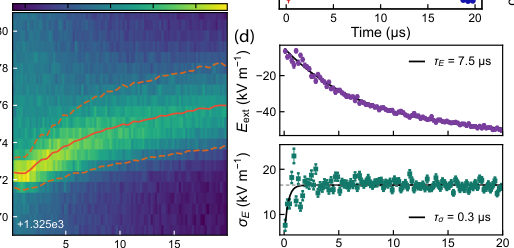
<figcaption class="paper-figure-caption"><b>Fig 4.</b> Fig. 4: Time-resolved charge-environment recovery (a) Pseudo-CW-PLE sequence: five AB pulses reset the environment, then a 20 µs resonant pulse probes while photons are registered (SNR &gt;5 for TC3). (b) Fitted center frequency and linewidth versus probe time after reset. (c) Time- resolved spectrogram of TC3 under 100 µW resonant illumination. (d) Model-extracted recovery of the external field Eext(t) and the charge-noise amplitude σE(t), on markedly different timescales.</figcaption>
</figure>
<figure class="paper-figure-card">
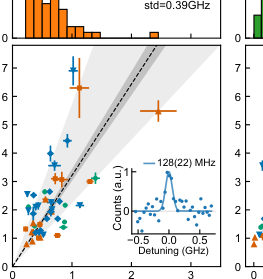
<figcaption class="paper-figure-caption"><b>Fig 5.</b> Fig. 5: Emitters statistics of the reset (a) AB-PLE linewidth histogram over 46 isolated T- centers (top) and AB-PLE versus PLE linewidth correlation (bottom), data taken across 5 devices with 3 junction width (color-coded). Median linewidth reduced from 1.99 to 0.57 GHz, a 71 % reduction. 20 µW, 50 ns pulse on a selected emitter yields 128(22) MHz fitted linewidth (inset). (b) AB-to-PLE frequency-shift histogram (top) and its correlation with PLE linewidth (bottom); PLE linewidth histogram (right). (c) Model derived Eext versus σE correlation (left), σE histogram. Correlation shows -0.9 kV/m in σE per 100 kV/m Eext increase, with median σE of 25.3 kV/m.</figcaption>
</figure>
</div>

<p><strong>Summary.</strong> The research tackles charge noise broadening in silicon T-centers, a major hurdle for quantum networking. By implementing an above-band optical pulse sequence, the authors successfully reset the local charge environment, dramatically narrowing the spectral linewidth. This demonstrates a robust, scalable method to create high-quality quantum emitters for integrated photonic circuits.</p>
<p><strong>Why it may be interesting.</strong> This work directly addresses a critical bottleneck in solid-state quantum photonics by providing an active method to suppress spectral diffusion noise, which is crucial for scaling up quantum interconnects based on spin-photon interfaces.</p>
<details>
<summary>Detailed structure</summary>
<p><strong>Main problem.</strong> The optical linewidth of single T-centers in silicon waveguides is broadened by fluctuating charge environments, which severely limits their use for high-fidelity quantum networking.</p>
<p><strong>Main result.</strong> Above-band illumination provides an unheralded method to reset the local charge environment, narrowing the median linewidth by up to 3.5 times and achieving a narrowest reported linewidth of 128 MHz.</p>
<p><strong>Method.</strong> The authors characterized the charge environment using pulsed photoluminescence excitation (PLE) measurements combined with electrical biasing and optical resetting techniques.</p>
<p><strong>Model / system.</strong> The system involves single T-centers embedded in lateral p-i-n waveguides on silicon. The analysis models the measured spectral lineshape by decomposing the effective field into a deterministic external field ($E_{ext}$) and Gaussian charge noise ($\sigma_E$).</p>
<p><strong>Key observables.</strong> Optical linewidth (FWHM), Rabi oscillation coherence time, local electric field shift (Stark effect), and charge-noise width ($\sigma_E$).</p>
<p><strong>Important parameters / regimes.</strong> Base temperature of 15 mK; initial linewidths in the GHz range; final narrowest linewidth of 128 MHz.</p>
<p><strong>Assumptions / limitations.</strong> The analysis assumes that the measured lineshape can be modeled by averaging a Lorentzian over the charge noise distribution, and that the T-center transition frequency follows a quadratic Stark map.</p>
<p><strong>Figures summary.</strong> Figures illustrate device schematics, pulse sequences (PLE/AB-PLE), voltage-resolved PLE spectrograms showing linewidth narrowing upon AB reset, and time-resolved measurements tracking charge environment recovery dynamics.</p>
<p><strong>Paper structure.</strong> The paper progresses from defining the problem (charge noise limiting indistinguishability) to presenting the novel measurement technique (AB-PLE resetting), quantifying the improvement across many emitters, and finally validating the underlying physics using Stark shift tuning and analytical modeling of the local field.</p>
</details>
<details>
<summary>Abstract</summary>
<p>The silicon T-center is a telecom-band spin-photon interface in a manufacturable photonics platform. In nanophotonic devices, however, its optical linewidth is broadened by a fluctuating charge environment, limiting photon indistinguishability for quantum networking. Here, we address this challenge through characterization and suppression of the local charge-noise of single T-centers in lateral p-i-n waveguides, demonstrating an unheralded method of T-center optical linewidth narrowing. Above-band illumination resets the charge environment, neutralizing the local field and suppressing spectral diffusion. Across 46 emitters this reset narrows the median linewidth 3.5-fold to 0.57(11) GHz, and an optimized emitter reaches 128(22) MHz, the narrowest unheralded linewidth reported for an integrated T-center. The narrowed transition supports coherent optical Rabi oscillations with a coherence time of 20(2) ns. Finally, we perform Stark-shift tuning using the p-i-n junction, and read out the local electric field and the charge-noise width at 15 mK. An analytical model of proximal surfaces, bulk, and junction field effects provides good agreement with our findings. Our multi-pronged characterization of the nanophotonic-integrated T-center charge environment enables future device optimization toward scalable quantum interconnects.</p>
</details>
<p><sub><a href="#top">↑ back to top</a></sub></p>

<p><a id="paper-2608.16815"></a></p>
<h3 id="hundred-hertz-quantum-circuit-iteration-rate-in-a-reusable-neutral-atom-array"><a href="http://arxiv.org/abs/2608.16815v1">Hundred-hertz quantum circuit iteration rate in a reusable neutral-atom array</a></h3>
<p><strong>Authors:</strong> Liang Chen, Wen-Yi Zhu, Dong-Qi Ma, Tian-Yang Zhang, Zi-Jie Chen, Yi-Chen Zhang, Hong-Jie Fan, Guang-Jie Chen, Qing-Xuan Jie, Wei-Zhou Cai, Tian-Cai Zhang, Luyan Sun, Yan-Lei Zhang, Xi-Feng Ren, Guang-Can Guo, Zhu-Bo Wang, Ya-Dong Hu, Gang Li, Chang-Ling Zou<br>
<strong>Type:</strong> experiment · <strong>Category:</strong> quantum information and computing · <strong>PDF:</strong> <a href="https://arxiv.org/pdf/2608.16815v1">https://arxiv.org/pdf/2608.16815v1</a><br>
<strong>Analysis basis:</strong> full PDF text, analyzed in chunks
<strong>Topic relevance:</strong> 🔥 <code>QC/QI experiment</code> <strong>4/5</strong> · <code>analog quantum simulation</code> <strong>2/5</strong> · <code>quantum measurements</code> <strong>2/5</strong> · <code>methods for driven-dissipative</code> <strong>1/5</strong> · <code>quantum optics experiment</code> <strong>1/5</strong></p>
<div class="figure-strip-hint">↔ Scroll figures horizontally</div>
<div class="paper-figures-scroll">
<figure class="paper-figure-card">
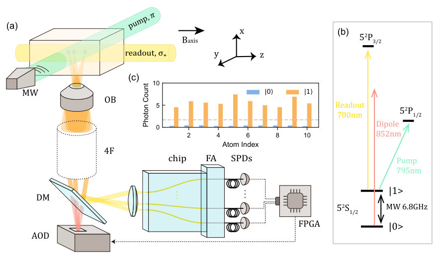
<figcaption class="paper-figure-caption"><b>Fig 1.</b> FIG. 1. Photonic-chip-enabled parallel site-resolved readout architecture for a neutral-atom array. (a) Experimental configuration. Ten 87Rb atoms are trapped in a one-dimensional tweezer array generated by an acousto-optic deflector (AOD). Global π-polarized microwave (MW), π-polarized optical-pumping, and σ+-polarized readout fields are used for qubit state initialization, gate operation, and readout. Atomic fluorescence collected by the objective (OB) is routed through a laser-written three-dimensional (3D) optical mapping chip, whose output pitch is matched to a fiber array (FA), and detected by independent single-photon detectors (SPDs). Detection events are processed in real time by a...</figcaption>
</figure>
<figure class="paper-figure-card">
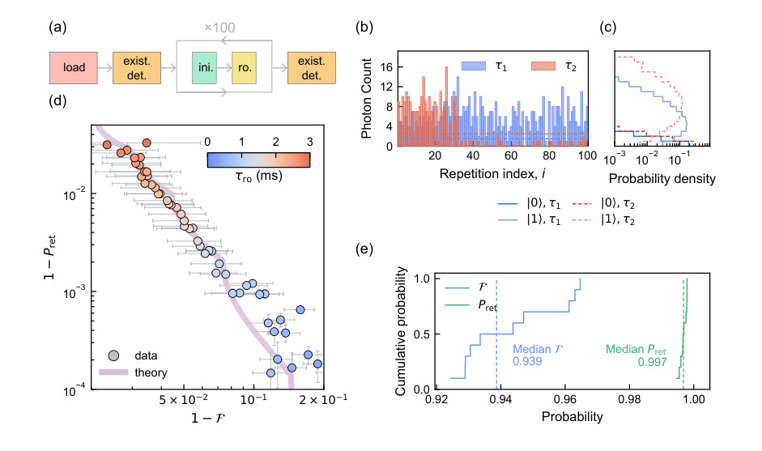
<figcaption class="paper-figure-caption"><b>Fig 2.</b> FIG. 2. Non-destructive readout and atom reuse. (a) Benchmark sequence of non-destructive readout. After atom loading and an initial fluorescence-based existence detection (exist. det.), qubit initialization (ini.) including cooling and qubit state initialization and readout (ro.) are repeated 100 times, followed by a final existence detection. The loading time, each existence-detection time, and the duration of one repeated cycle are 200ms, 45ms, and 7ms, respectively. (b) Representative readout signal datasets over 100 repetitions for two readout durations, τ1 = 1.5ms and τ2 = 2.5ms. (c) Corresponding readout signal distributions for |1⟩and |0⟩states. (d) Trade-off between the...</figcaption>
</figure>
<figure class="paper-figure-card">
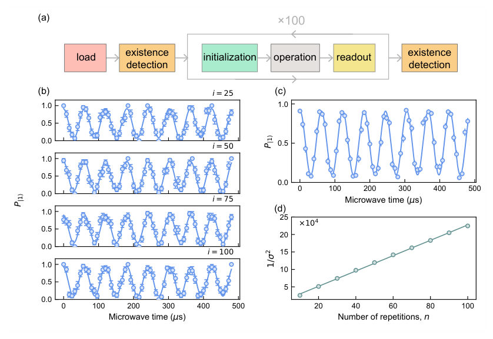
<figcaption class="paper-figure-caption"><b>Fig 3.</b> FIG. 3. Stable information accumulation during repeated circuit execution. (a) Sequence used for Rabi-oscillation sampling. A microwave- driven single-qubit gate operation (op.) is inserted between qubit initialization and readout in each of the 100 reuse cycles. (b) Rabi oscillations reconstructed separately from the 25th, 50th, 75th, and 100th repetitions. Points show the measured |1⟩state population P|1⟩, and solid curves are independent fits to a sinusoid function. Error bars represent one standard error. (c) Rabi oscillation obtained by combining data from all 100 repetitions. Points show the measured |1⟩state population P|1⟩, and solid curve is a fit to a sinusoid function. Each data...</figcaption>
</figure>
<figure class="paper-figure-card">
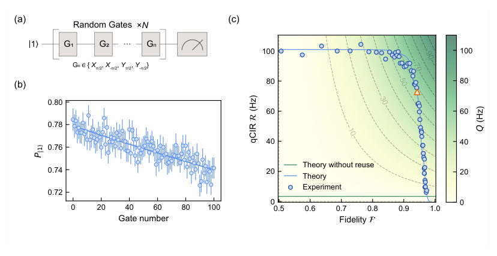
<figcaption class="paper-figure-caption"><b>Fig 4.</b> FIG. 4. Rapid single-qubit randomized benchmarking and optimization of the normalized Fisher information rate. (a) Single-qubit randomized- benchmarking circuit. The atom is prepared in |1⟩and then subjected to n randomly sampled gates Gn ∈{Xπ/2,X−π/2,Yπ/2,Y−π/2} including 1 or 2 recovery gates chosen such that the ideal final state is |1⟩, before state readout. (b) Measured |1⟩state probability P|1⟩as a function of gate number n. Each data point is sampled over 593 random sequences, and averaged over 10 atoms. Error bars represent one standard error, and the solid curve is an exponential fit, yielding an average fidelity of 99.93%. (c) Measured quantum circuit iteration rate after post-...</figcaption>
</figure>
</div>

<p><strong>Summary.</strong> This paper reports an experimental demonstration achieving high-throughput operation in a neutral-atom quantum processor by implementing non-destructive readout and atom reuse techniques. By integrating a photonic chip interface, the authors surpassed previous limitations to achieve a post-selected circuit iteration rate of 74.8 Hz. This work establishes a practical pathway toward building scalable, fast quantum computing hardware.</p>
<p><strong>Why it may be interesting.</strong> This work directly addresses a critical engineering hurdle in quantum computing—the speed of operations. The focus on throughput optimization via resource management (atom reuse) is highly relevant for scaling up any physical qubit modality.</p>
<details>
<summary>Detailed structure</summary>
<p><strong>Main problem.</strong> The practical performance of neutral-atom quantum processors is limited by low quantum circuit iteration rates (qCIRs) and overall information throughput.</p>
<p><strong>Main result.</strong> The authors achieved a post-selected qCIR of 74.8 Hz, significantly improving throughput via an optimized methodology that utilized non-destructive readout and atom reuse.</p>
<p><strong>Method.</strong> They implemented a high-throughput system using a chip-based photonic interface to enable fast, state-resolved, non-destructive readout and designed a benchmark sequence incorporating atom reuse between circuits.</p>
<p><strong>Model / system.</strong> The platform is a neutral-atom array (using ${}^{87}	ext{Rb}$ atoms) integrated with an optical channel mapping (OCM) chip for parallel site-resolved readout. The core innovation lies in the ability to rapidly cycle qubits without full reloading.</p>
<p><strong>Key observables.</strong> Raw qCIR (101 Hz), post-selected qCIR (74.8 Hz), and normalized Fisher information rate (57.7 Hz).</p>
<p><strong>Important parameters / regimes.</strong> Retention probability of 99.7%; the cycle time is dominated by a $7	ext{ms}$ benchmark cycle.</p>
<p><strong>Assumptions / limitations.</strong> The improvement relies on establishing a direct qubit-to-detector correspondence via the OCM chip, enabling non-destructive and fast readout.</p>
<p><strong>Figures summary.</strong> Figures illustrate the experimental setup using the photonic chip (Fig. 1), detail the atom reuse benchmark sequence (Fig. 2), and show trade-offs between fidelity/retention probability versus readout duration (Fig. 2(d)).</p>
<p><strong>Paper structure.</strong> The paper progresses by first identifying the throughput bottleneck, then detailing the OCM chip integration for non-destructive readout, demonstrating the atom reuse protocol to achieve high raw qCIRs, and finally optimizing performance using the Fisher information rate.</p>
</details>
<details>
<summary>Abstract</summary>
<p>Neutral-atom quantum processors have rapidly advanced in scale and coherence, yet their practical performance remains constrained by limited quantum circuit iteration rates (qCIRs) and information throughput. Here we experimentally demonstrate a high-throughput neutral-atom system based on non-destructive readout and atom reuse. By integrating a chip-based photonic interface with a 10-qubit array, we implement non-destructive readout with a retention probability of 99.7%, and further achieve a raw qCIR of 101Hz and a post-selected qCIR of 74.8Hz. More importantly, we verify a general throughput optimization methodology and obtain a normalized Fisher information rate of 57.7Hz, improving the achievable throughput by more than one order of magnitude compared with conventional methods. Our results establish a practical route toward high-throughput neutral-atom quantum processors.</p>
</details>
<p><sub><a href="#top">↑ back to top</a></sub></p>

<p><a id="paper-2608.16027"></a></p>
<h3 id="sub-cycle-metrology-of-bright-quantum-light"><a href="http://arxiv.org/abs/2608.16027v1">Sub-cycle metrology of bright quantum light</a></h3>
<p><strong>Authors:</strong> Shima Gholam-Mirzaei, Michael T. Weil, David N. Purschke, Katarzyna M. Kowalczyk, André Staudte, David M. Villeneuve, Paul B. Corkum, Jeff S. Lundeen, T. J. Hammond, Giulio Vampa<br>
<strong>Type:</strong> experiment · <strong>Category:</strong> quantum information and computing · <strong>PDF:</strong> <a href="https://arxiv.org/pdf/2608.16027v1">https://arxiv.org/pdf/2608.16027v1</a><br>
<strong>Analysis basis:</strong> full PDF text, analyzed in chunks
<strong>Topic relevance:</strong> 🔥 <code>quantum optics experiment</code> <strong>4/5</strong> · <code>quantum measurements</code> <strong>2/5</strong> · <code>Full counting statistics</code> <strong>1/5</strong> · <code>QC/QI experiment</code> <strong>1/5</strong> · <code>interference shaping light</code> <strong>1/5</strong></p>
<div class="figure-strip-hint">↔ Scroll figures horizontally</div>
<div class="paper-figures-scroll">
<figure class="paper-figure-card">
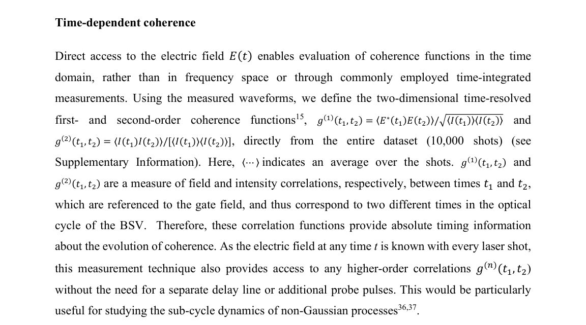
<figcaption class="paper-figure-caption"><b>Fig 1.</b> Figure 4a shows ห𝑔𝑔(1)(𝑡𝑡1, 𝑡𝑡2)ห. The width of the distribution along any vertical or horizontal lineout</figcaption>
</figure>
<figure class="paper-figure-card">
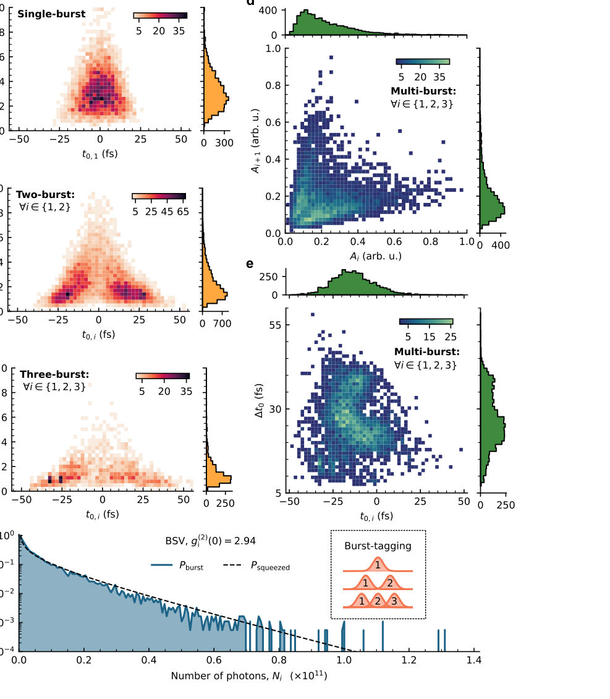
<figcaption class="paper-figure-caption"><b>Fig 2.</b> Fig. 2: Modal analysis of BSV. a-c, Amplitude vs. emission time distributions for single-burst, two-burst, and three-burst BSV, respectively. d, Distribution of the amplitudes of adjacent burst pairs. e, Distribution of emission times of adjacent burst pairs (i.e., bursts i and i+1 of the i-th burst pair in each shot). The emission time of the first burst in each pair (t0,i) is plotted against the time-delay of each pair</figcaption>
</figure>
<figure class="paper-figure-card">
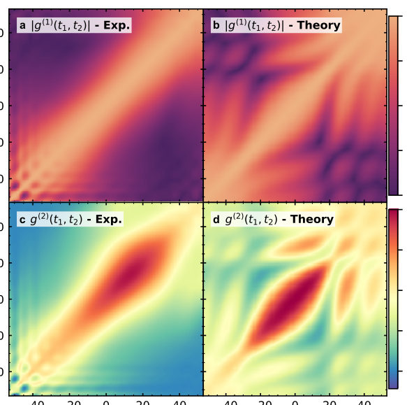
<figcaption class="paper-figure-caption"><b>Fig 3.</b> Fig. 4: Time-resolved quantum coherence functions. a, The absolute value of the measured first-order coherence function ห𝑔𝑔(1)(𝑡𝑡1, 𝑡𝑡2)ห of the generated femtosecond BSV. b, The theoretical ห𝑔𝑔(1)(𝑡𝑡1, 𝑡𝑡2)ห calculated using the Whittaker-Shannon decomposition. c, The measured second-order coherence function 𝑔𝑔(2)(𝑡𝑡1, 𝑡𝑡2) of the generated BSV. d, The theoretical 𝑔𝑔(2)(𝑡𝑡1, 𝑡𝑡2) calculated using the Whittaker-Shannon decomposition.</figcaption>
</figure>
</div>

<p><strong>Summary.</strong> The research overcomes the limitation of cycle-averaging in quantum light measurements by employing sub-cycle resolution metrology on bright squeezed vacuum. This technique reveals that the quantum state consists of stochastic, time-localized bursts whose relative phases are randomly distributed between two values separated by $\pi$. These random phase flips are then harnessed to generate high-rate quantum random number sequences approaching petahertz frequencies.</p>
<p><strong>Why it may be interesting.</strong> This work directly bridges advanced quantum optics metrology (attosecond techniques) with quantum information processing by providing a physical mechanism to generate certified random numbers at extremely high bandwidths.</p>
<details>
<summary>Detailed structure</summary>
<p><strong>Main problem.</strong> To measure the electric-field evolution of quantum light (femtosecond bright squeezed vacuum) with sub-cycle precision, overcoming limitations where conventional measurements average over multiple field cycles.</p>
<p><strong>Main result.</strong> The study successfully characterized stochastic, time-localized bursts in the BSV and demonstrated that the random phase flips between adjacent bursts can be exploited to generate quantum random bit sequences at petahertz frequencies.</p>
<p><strong>Method.</strong> Attosecond metrology techniques are adapted using nonlinear absorption on a silicon CMOS sensor to map the electric field $E(t)$ with sub-cycle resolution, followed by statistical analysis of phase differences.</p>
<p><strong>Model / system.</strong> The system uses Bright Squeezed Vacuum (BSV) generated via spontaneous parametric down-conversion. The temporal structure is modeled using Whittaker–Shannon time-limited modes, which are localized in time and distinct from conventional Schmidt modes.</p>
<p><strong>Key observables.</strong> Time-resolved coherence functions ($g^{(1)}(t_1, t_2)$, $g^{(2)}(t_1, t_2)$), burst statistics (number, duration), and the bimodal distribution of relative phase differences ($\Delta\phi$).</p>
<p><strong>Important parameters / regimes.</strong> Sub-cycle precision; petahertz generation rates; femtosecond burst widths ($\sim 17$ fs); $\pi$-separated phases.</p>
<p><strong>Assumptions / limitations.</strong> The random phase flips are assumed to reflect spontaneous symmetry breaking, and the analysis relies on fitting procedures derived from theoretical models of joint spectral amplitudes.</p>
<p><strong>Figures summary.</strong> Figures illustrate experimental setups (Fig. 1a), pulse energy/signal histograms (Figs. 1b, 1c), representative burst waveforms (Fig. 1d), coherence function measurements (Fig. 4a/c), and the final NIST test results for randomness (Fig. S10).</p>
<p><strong>Paper structure.</strong> The paper progresses from describing the fundamental limitation of cycle-averaged quantum optics to detailing the experimental measurement technique, characterizing the stochastic burst structure, and finally demonstrating the application of phase randomness for high-rate QRNG.</p>
</details>
<details>
<summary>Abstract</summary>
<p>In quantum optics, quantization of the electromagnetic field typically occurs in a finite volume - a cavity - which results in discrete frequency modes where photons are created, annihilated and exchanged between such modes. As a result, evolution of quantum optical states is periodic in the carrier wave of the field, measurement protocols return cycle-averaged information, and any sub-cycle evolution that is foundational to many light-matter interactions, especially at high field strengths, remains hidden. Adapting an attosecond technique, here we capture the electric-field evolution of a quantum optical state, femtosecond bright squeezed vacuum, with sub-cycle precision. We find that it consists of many stochastic, time-localized bursts within each pump pulse whose phase randomly switches between two values. We exploit the random phase flips to generate quantum random bit sequences with a generation rate that can reach petahertz frequencies. In addition, the sub-cycle resolution allows us to measure coherence functions of the waveforms between any two times, which we explain with a superposition of time-limited modes. These results bridge attosecond metrology and quantum optics and pave the way to measuring quantum light-matter interactions as they evolve on a few-femtosecond time scale, and integrate quantum randomness in petahertz electronics.</p>
</details>
<p><sub><a href="#top">↑ back to top</a></sub></p>

<p><a id="paper-2608.15173"></a></p>
<h3 id="tide-an-fpga-quantum-control-processor-for-deterministic-adaptive-execution-with-guarded-runtime-program-revision"><a href="http://arxiv.org/abs/2608.15173v1">TIDE: An FPGA quantum-control processor for deterministic adaptive execution with guarded runtime program revision</a></h3>
<p><strong>Authors:</strong> Xiaoqin Luo, Jiayun Song, Xiaolu Su<br>
<strong>Type:</strong> experiment · <strong>Category:</strong> quantum information and computing · <strong>PDF:</strong> <a href="https://arxiv.org/pdf/2608.15173v1">https://arxiv.org/pdf/2608.15173v1</a><br>
<strong>Analysis basis:</strong> full PDF text, analyzed in chunks
<strong>Topic relevance:</strong> 🔥 <code>QC/QI experiment</code> <strong>4/5</strong> · <code>quantum measurements</code> <strong>3/5</strong> · <code>methods for driven-dissipative</code> <strong>1/5</strong></p>
<div class="figure-strip-hint">↔ Scroll figures horizontally</div>
<div class="paper-figures-scroll">
<figure class="paper-figure-card">
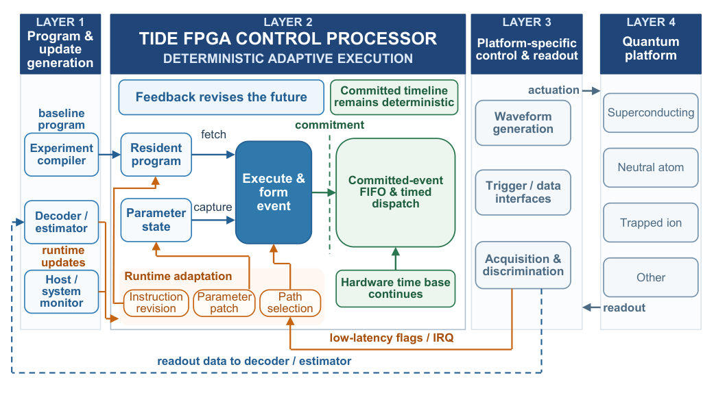
<figcaption class="paper-figure-caption"><b>Fig 1.</b> FIG. 1. Deterministic adaptive execution in the TIDE quantum-control stack. An experiment compiler supplies the resident program, while decoder, estimator, or host logic provides runtime updates after execution begins. Within TIDE, parameter and instruction states associated with future operations remain revisable before the corresponding capture or fetch-visibility boundary. Complete event descriptors that cross the commitment boundary enter an independent hardware-timed dispatch path. TIDE exposes registered digital transactions to platform-specific control and readout electronics, with measurement results returning through external processing or low-latency feedback paths.</figcaption>
</figure>
<figure class="paper-figure-card">
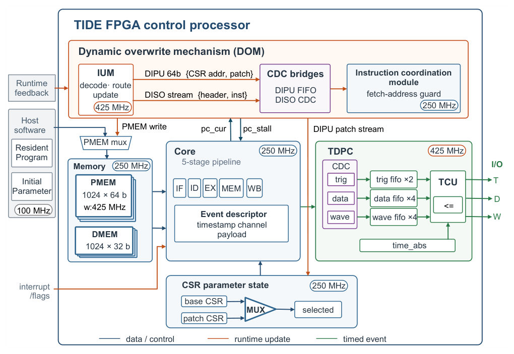
<figcaption class="paper-figure-caption"><b>Fig 2.</b> FIG. 2. Architecture and clock-domain organization of TIDE. Runtime DIPU and DISO transactions enter the Instruction Update Module (IUM), while the Instruction Coordination Module (ICM) guards program-memory visibility and locally stalls fetch when required. The 250 MHz control core forms complete timestamped descriptors from resident instructions and selected CSR values. Valid–ready acceptance into a per-channel TDPC FIFO marks event commitment, after which the 425 MHz Timing Control Unit dispatches registered trigger, data-control, and waveform-parameter transactions against the free-running time_abs counter. Clock tags indicate the 100, 250, and 425 MHz domains.</figcaption>
</figure>
<figure class="paper-figure-card">
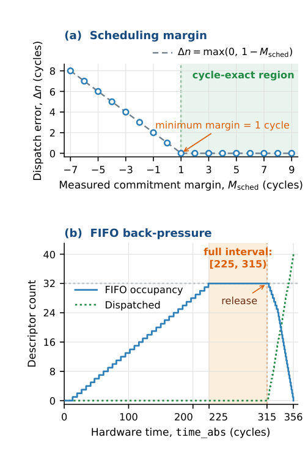
<figcaption class="paper-figure-caption"><b>Fig 3.</b> FIG. 3. Measured committed-event timing and FIFO back- pressure. (a) Dispatch error versus event-commitment mar- gin. Fifteen repetitions were recorded at each of 17 margin settings; coincident records overlap. All 255 records follow ∆n = max(0, 1 −Msched), with programmed-cycle dispatch for Msched ≥1. (b) Occupancy and cumulative dispatch for 40 descriptors traversing a 32-entry TDPC FIFO. Thirty-two descriptors commit before the FIFO reaches capacity, while the remaining eight are retained upstream as the FIFO re- mains full over 225 ≤time_abs &lt; 315. After release, the remaining eight descriptors commit as space becomes avail- able, and all 40 descriptors dispatch in order without loss,...</figcaption>
</figure>
<figure class="paper-figure-card">
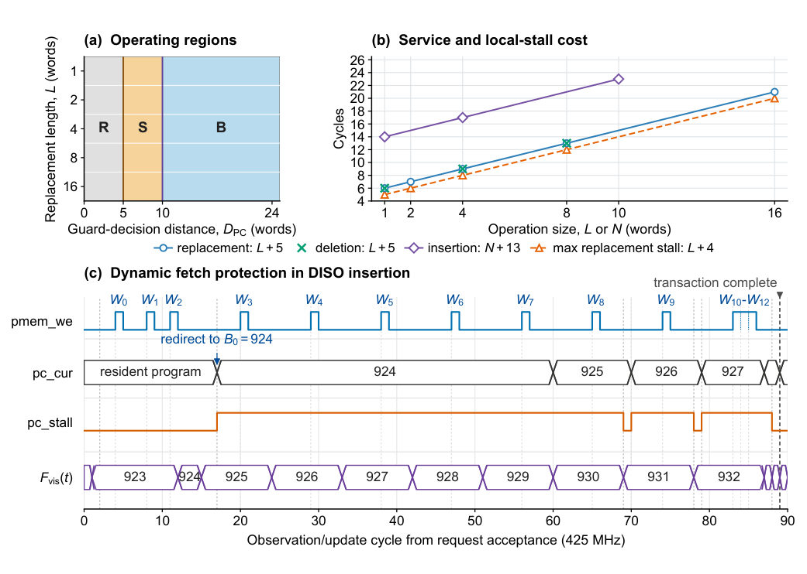
<figcaption class="paper-figure-caption"><b>Fig 4.</b> FIG. 4. Measured guarded runtime instruction revision. (a) Operating-region summary for 125 replacement cases over L ∈ {1, 2, 4, 8, 16} and DPC = 0, . . . , 24. All 125 measured cases matched rejection for DPC &lt; 5, immediate local fetch protection for 5 ≤DPC &lt; 10, and background start for DPC ≥10. (b) Measured service latency and maximum local-fetch stall under continuous payload delivery. Replacement follows L+5 for L ∈{1, 2, 4, 8, 16}; deletion data at L ∈{1, 4, 8} follow the same law. Insertion follows N +13 cycles for the tested sizes, and the maximum observed replacement stall follows L+4. (c) Gap-injected insertion with N = 10 and DPC = 10. Slowed payload delivery causes an initially...</figcaption>
</figure>
<figure class="paper-figure-card">
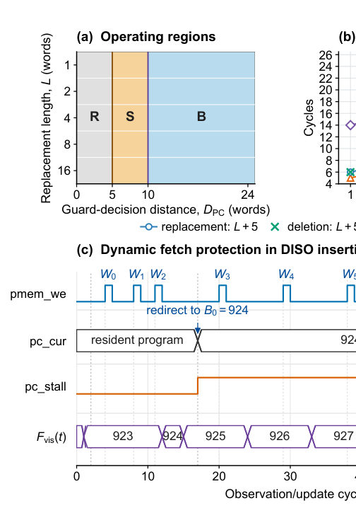
<figcaption class="paper-figure-caption"><b>Fig 5.</b> Figure 4(a) shows the characterized operating map. The configured boundaries were reproduced for every tested block length:</figcaption>
</figure>
</div>

<p><strong>Summary.</strong> The paper introduces TIDE, an FPGA processor designed for quantum control that enables adaptive execution by allowing runtime modification of future instructions and parameters. It achieves this determinism by strictly separating the revisable program state from a hardware-timed FIFO queue of committed events. This breakthrough allows complex, measurement-driven quantum experiments to be programmed reliably in real time.</p>
<p><strong>Why it may be interesting.</strong> This work directly addresses the critical bottleneck in scaling quantum computation: building classical control electronics fast enough to handle mid-circuit measurement feedback. The deterministic separation of concerns is vital for realizing fault-tolerant quantum algorithms.</p>
<details>
<summary>Detailed structure</summary>
<p><strong>Main problem.</strong> The core challenge is designing quantum control programs that can adapt their future operations based on real-time measurement outcomes without disrupting the timing of events already committed to hardware execution.</p>
<p><strong>Main result.</strong> TIDE successfully implements a processor architecture that allows runtime revision of both parameters and instruction structure while guaranteeing deterministic, immutable service for all previously committed quantum control events.</p>
<p><strong>Method.</strong> The system uses an FPGA-based processor (TIDE) that separates the program's revisable future from a hardware-timed, committed event stream using specialized update mechanisms.</p>
<p><strong>Model / system.</strong> The physical platform is TIDE, an FPGA quantum-control processor implemented on a Xilinx ZCU102. It features a control core and a Time-Deterministic Peripheral-Control (TDPC) engine that manages the immutable dispatch of committed events.</p>
<p><strong>Key observables.</strong> Committed descriptors remaining unchanged under subsequent perturbations; successful execution of revised sequences via DIPU/DISO; timing margins measured in clock cycles (e.g., 4 cycles for DIPU).</p>
<p><strong>Important parameters / regimes.</strong> Control core frequency (250 MHz) and timing/update domain frequency (425 MHz); the size of the revision window (L-word overwrite length).</p>
<p><strong>Assumptions / limitations.</strong> The system assumes that successful FIFO acceptance marks event commitment, making descriptors immutable; it also relies on statically allocated extension regions for structural overwrites.</p>
<p><strong>Figures summary.</strong> Figure 1 illustrates the TIDE quantum-control stack, showing how runtime feedback revises the future while the committed timeline remains deterministic. Figure 2 details the architecture, showing data flow between components like the control core and TDPC FIFOs.</p>
<p><strong>Paper structure.</strong> The paper introduces the problem of measurement-responsive quantum control, presents the TIDE architecture which separates revision from commitment via DIPU (parameter patch) and DISO (structural overwrite), validates its timing performance on hardware, and demonstrates that committed events are protected from subsequent runtime updates.</p>
</details>
<details>
<summary>Abstract</summary>
<p>Measurement-responsive quantum experiments require control programs that can revise future operations after execution has begun without disturbing events already committed to precise timing. We present Time-Deterministic and Instruction-Dynamic Execution (TIDE), an FPGA quantum-control processor that separates a runtime-revisable future from a hardware-timed committed-event stream. TIDE provides two complementary update paths: Dynamic Instruction Parameter Update (DIPU) applies a one-shot patch to the next matching event before parameter capture, while Dynamic Instruction Stream Overwrite (DISO) performs guarded replacement, logical deletion, and out-of-line insertion in future resident-program regions. Per-channel committed-event FIFOs isolate accepted descriptors from subsequent control-core and update activity. The implemented Xilinx ZCU102 design meets timing at 250 MHz for the control core and 425 MHz for the timing/update domain. With downstream ready, every tested descriptor committed at least one timing-domain cycle before its programmed timestamp was dispatched in the programmed cycle at the registered output interfaces. In separate post-commit tests, committed timestamps and payloads remained unchanged under the applied perturbations. The minimum all-success mapped DIPU margin was four 250 MHz control-domain cycles. Under continuous payload delivery, an L-word contiguous overwrite completed in L+5 update-domain cycles. Within the characterized guard-distance range, rejected DISO requests preserved the resident path, whereas all admitted replacement, deletion, and insertion transactions exercised here executed a complete revised sequence. TIDE therefore enables runtime adaptation of both parameters and instruction structure while preserving deterministic service of committed quantum-control events.</p>
</details>
<p><sub><a href="#top">↑ back to top</a></sub></p>

<p><a id="paper-2608.16510"></a></p>
<h3 id="the-unidirectional-current-as-first-arrival-time-povm-an-ms-kijowski-identity-physical-interpretation-and-mathematical-applications"><a href="http://arxiv.org/abs/2608.16510v1">The Unidirectional Current as First Arrival-Time POVM: An MS-Kijowski Identity, Physical Interpretation, and Mathematical Applications</a></h3>
<p><strong>Authors:</strong> Avi Marchewka<br>
<strong>Type:</strong> theory · <strong>Category:</strong> other · <strong>PDF:</strong> <a href="https://arxiv.org/pdf/2608.16510v1">https://arxiv.org/pdf/2608.16510v1</a><br>
<strong>Analysis basis:</strong> full PDF text, analyzed in chunks
<strong>Topic relevance:</strong> 🔥 <code>quantum measurements</code> <strong>4/5</strong> · <code>Full counting statistics</code> <strong>1/5</strong> · <code>Keldysh / 2PI / non-Gaussian methods</code> <strong>1/5</strong> · <code>correlated / nonlocal dissipation</code> <strong>1/5</strong></p>
<div class="figure-strip-hint">↔ Scroll figures horizontally</div>
<div class="paper-figures-scroll">
<figure class="paper-figure-card">
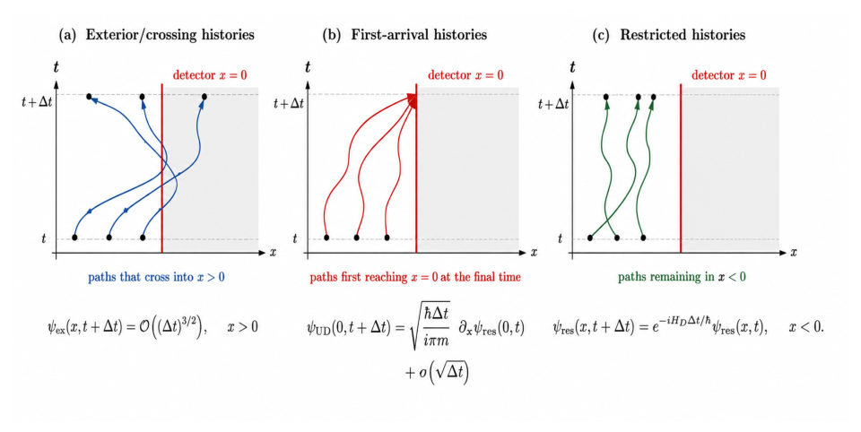
<figcaption class="paper-figure-caption"><b>Fig 1.</b> Figure 1: Path decomposition relative to the detector boundary at x = 0. (a) Histories that reach the boundary and propagate into the exterior region. (b) Histories whose first arrival at the boundary occurs at t + ∆t. (c) Restricted histories that remain in x &lt; 0 throughout the interval [t, t + ∆t].</figcaption>
</figure>
</div>

<p><strong>Summary.</strong> This paper reinterprets the unidirectional current from the MS formalism as a proper Positive Operator Valued Measure (POVM) for measuring first arrival time. By enforcing mathematical consistency via the resolution of the identity, the authors derive the required spectral response function $\lambda(k)$. This work establishes a deep connection between the MS approach and Kijowski's established framework, providing a unified theoretical description of quantum arrival-time statistics.</p>
<p><strong>Why it may be interesting.</strong> It provides a rigorous, operator-based framework (POVM) for calculating time-of-arrival probabilities, resolving ambiguities in older interpretations like hazard rates, which is crucial for understanding measurement processes in quantum dynamics.</p>
<details>
<summary>Detailed structure</summary>
<p><strong>Main problem.</strong> The paper addresses the quantum time-of-arrival (TOA) problem, which lacks a universally accepted observable in quantum mechanics.</p>
<p><strong>Main result.</strong> It establishes that the unidirectional current derived from the MS formulation can be rigorously interpreted as a Positive Operator Valued Measure (POVM), and this POVM structure is shown to mathematically match Kijowski's arrival-time distribution.</p>
<p><strong>Method.</strong> The authors construct an arrival-time POVM by generalizing the MS unidirectional current using a spectral response function $\lambda(k)$ and enforcing the resolution of the identity condition for free particles.</p>
<p><strong>Model / system.</strong> The analysis focuses on a one-dimensional free particle confined to the negative half-line ($x<0$) with a Dirichlet boundary condition at the detector location ($x=0$).</p>
<p><strong>Key observables.</strong> Unidirectional first-arrival current ($J_{UD}(t)$), arrival-time POVM ($   ext{E}(\Delta)$), and Kijowski's arrival-time distribution ($\Pi_K(t)$).</p>
<p><strong>Important parameters / regimes.</strong> The spectral response function $\lambda(k) = \pi/(4k)$, the free particle dispersion relation, and time $t$.</p>
<p><strong>Assumptions / limitations.</strong> The analysis assumes a phenomenological detector model with a diagonal, phase-free spectral response ($\lambda(k)$), and relies on the free-particle Hamiltonian.</p>
<p><strong>Figures summary.</strong> Figure 1 illustrates the path decomposition of Feynman paths relative to the detector boundary at $x=0$.</p>
<p><strong>Paper structure.</strong> The paper first introduces the MS unidirectional current, then generalizes it by treating the detection parameter $\lambda$ as a spectral function $\lambda(k)$. It derives the POVM from normalization constraints and finally establishes the mathematical equivalence between this POVM and Kijowski's two-sided arrival-time distribution.</p>
</details>
<details>
<summary>Abstract</summary>
<p>Detector-based first-arrival models and operator-based arrival-time observables provide two conceptually distinct approaches to the quantum time-of-arrival problem. Here we connect these approaches by using the positive unidirectional first-arrival current of Marchewka and Schuss (MS) as the basis for constructing a family of positive arrival-time operators and, after normalization, an arrival-time POVM. The first-arrival character is inherited from the dynamics with a Dirichlet boundary, while the detector response is introduced at the amplitude level through a non-negative spectral function $λ(k)$.   For a one-dimensional free particle, resolution of the identity uniquely selects $λ(k)=\fracπ{4k}$, yielding an arrival-time POVM. The normalized unidirectional current can therefore be interpreted as a generalized Born-rule probability density rather than as a hazard rate, as in the original MS formulation.   We further show that the normalized one-sided MS amplitude coincides, up to an irrelevant phase, with the corresponding momentum-sector amplitude in Kijowski's arrival-time distribution. Consequently, the two directional contributions in Kijowski's distribution can be reproduced by two first-arrival problems defined on opposite sides of the boundary. This establishes an equivalence between the resulting arrival-time statistics while emphasizing the different physical interpretations: MS describes a first-arrival process with coherent momentum components, whereas Kijowski's POVM treats the two momentum sectors as separate directional contributions.   Thus, the normalized unidirectional current provides a POVM description of first arrival at a point, combining detector-based dynamics with a positive-operator measurement structure.</p>
</details>
<p><sub><a href="#top">↑ back to top</a></sub></p>

<p><a id="paper-2608.15209"></a></p>
<h3 id="anomalous-weak-pointer-shifts-as-postselected-interference-among-coarse-grained-histories"><a href="http://arxiv.org/abs/2608.15209v1">Anomalous Weak Pointer Shifts as Postselected Interference among Coarse-Grained Histories</a></h3>
<p><strong>Authors:</strong> Cody Charles Payne, Eliahu Cohen<br>
<strong>Type:</strong> theory · <strong>Category:</strong> other · <strong>PDF:</strong> <a href="https://arxiv.org/pdf/2608.15209v1">https://arxiv.org/pdf/2608.15209v1</a><br>
<strong>Analysis basis:</strong> full PDF text, analyzed in chunks
<strong>Topic relevance:</strong> 🔥 <code>quantum measurements</code> <strong>4/5</strong> · <code>Keldysh / 2PI / non-Gaussian methods</code> <strong>1/5</strong> · <code>interference shaping light</code> <strong>1/5</strong></p>
<div class="figure-strip-hint">↔ Scroll figures horizontally</div>
<div class="paper-figures-scroll">
<figure class="paper-figure-card">
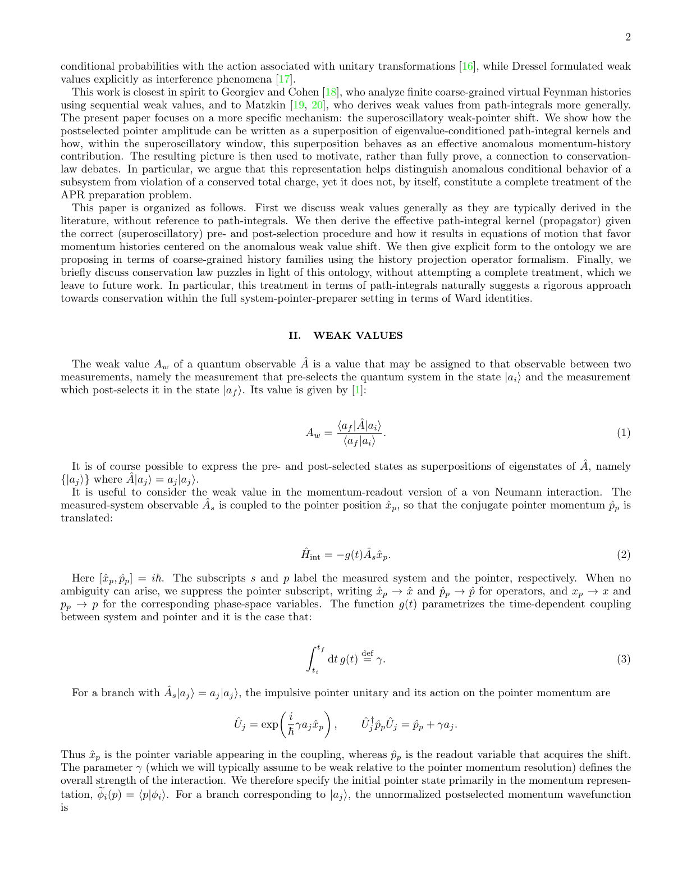
<figcaption class="paper-figure-caption"><b>Fig 1.</b> Low-resolution page preview, page 2</figcaption>
</figure>
<figure class="paper-figure-card">
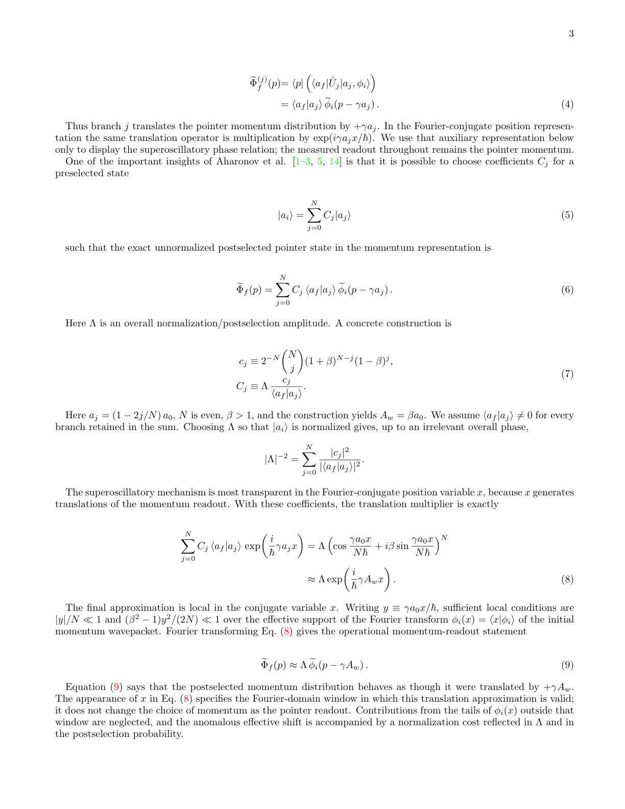
<figcaption class="paper-figure-caption"><b>Fig 2.</b> Low-resolution page preview, page 3</figcaption>
</figure>
<figure class="paper-figure-card">
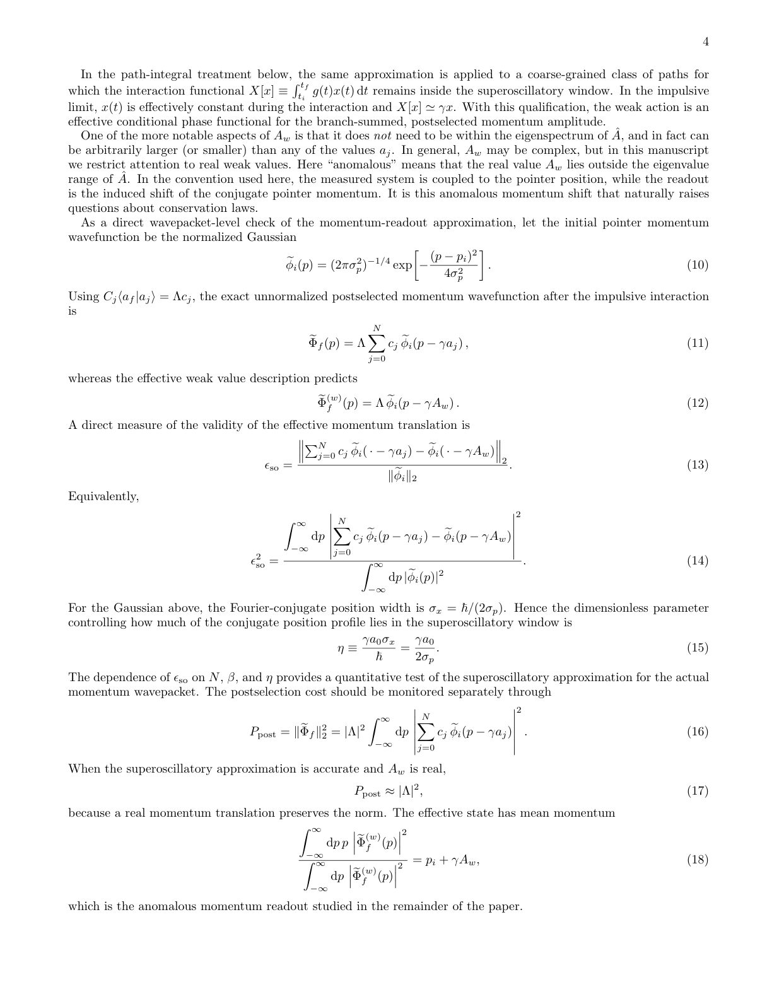
<figcaption class="paper-figure-caption"><b>Fig 3.</b> Low-resolution page preview, page 4</figcaption>
</figure>
<figure class="paper-figure-card">
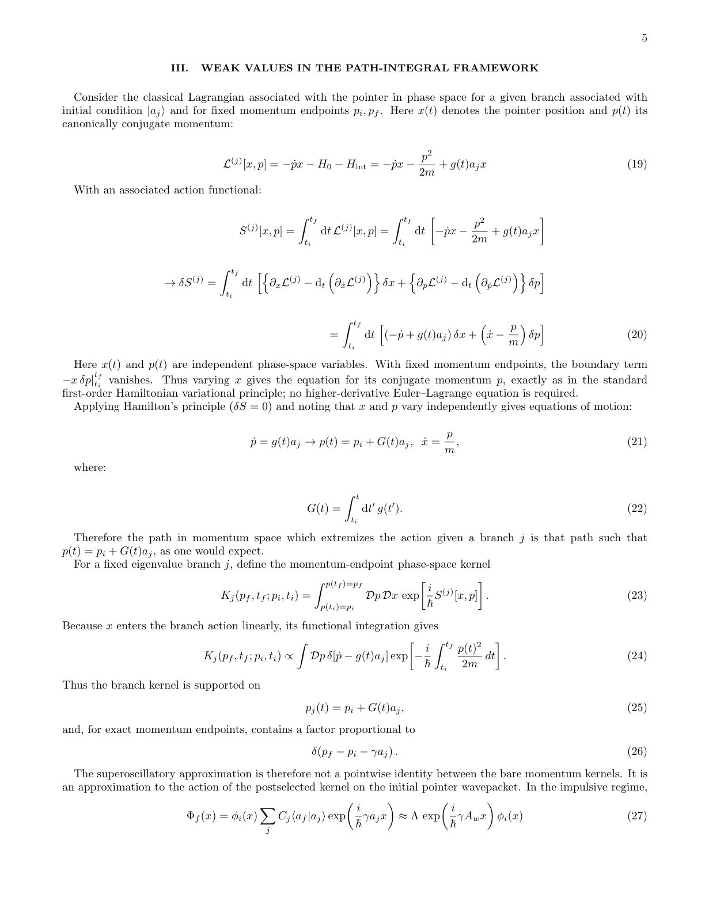
<figcaption class="paper-figure-caption"><b>Fig 4.</b> Low-resolution page preview, page 5</figcaption>
</figure>
<figure class="paper-figure-card">
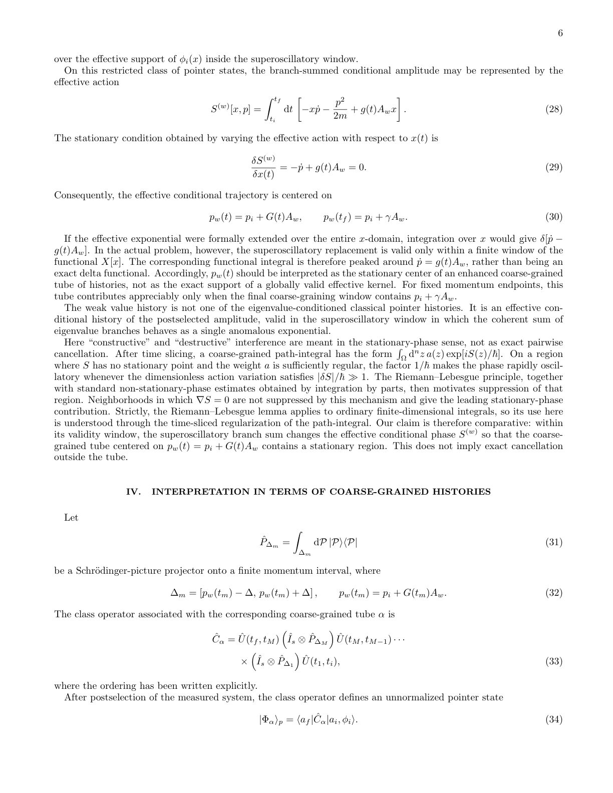
<figcaption class="paper-figure-caption"><b>Fig 5.</b> Low-resolution page preview, page 6</figcaption>
</figure>
</div>

<p><strong>Summary.</strong> This paper develops a phase-space path-integral formalism to explain anomalous weak pointer shifts. It shows that these seemingly unusual shifts are mathematically equivalent to constructive interference among multiple coarse-grained quantum histories. This offers a powerful, intuitive picture of measurement outcomes while maintaining consistency with fundamental conservation laws in the full closed system.</p>
<p><strong>Why it may be interesting.</strong> It provides a deep theoretical interpretation of weak measurements and pointer shifts within the framework of quantum histories, connecting non-classical measurement outcomes to fundamental concepts like interference and conservation laws in a path-integral setting.</p>
<details>
<summary>Detailed structure</summary>
<p><strong>Main problem.</strong> The paper reformulates anomalous weak pointer shifts, which allow effective measurements outside an observable's eigenvalue range, by interpreting them as interference among coarse-grained histories.</p>
<p><strong>Main result.</strong> The postselected momentum distribution behaves as if it were translated by an effective shift $\gamma A_w$, providing a path-integral representation of the anomalous weak value effect via history interference.</p>
<p><strong>Method.</strong> The analysis uses phase-space path integrals, applying superoscillatory approximations to sum over branch-conditioned amplitudes derived from measurement coupling.</p>
<p><strong>Model / system.</strong> The model involves a quantum system ($\hat{A}_s$) coupled weakly to a pointer observable ($\hat{x}_p$), analyzed using path integral techniques and focusing on the resulting momentum readout.</p>
<p><strong>Key observables.</strong> Anomalous weak value ($A_w$), effective mean momentum shift $\langle p 
angle = p_i + \gamma A_w$, and the total conserved generator $Q_{	ext{tot}}$.</p>
<p><strong>Important parameters / regimes.</strong> The coupling constant ($\gamma$) and the window size defining the superoscillatory approximation.</p>
<p><strong>Assumptions / limitations.</strong> The analysis relies on satisfying a finite superoscillatory-window condition for the initial momentum wavepacket, and it is explicitly noted not to be a complete resolution of all conservation law puzzles.</p>
<p><strong>Paper structure.</strong> The paper progresses by introducing the anomalous shift, reformulating it in path integrals using branch conditioning, applying superoscillatory approximations to derive an effective momentum translation, and finally analyzing how this structure relates to symmetry constraints via Ward identities.</p>
</details>
<details>
<summary>Abstract</summary>
<p>Anomalous weak values and superoscillations allow a pointer to exhibit an effective shift outside the eigenvalue range of the measured observable. We reformulate this effect in a phase-space path-integral language. For each eigenvalue branch $a_j$ of the measured observable, {the interaction couples $a_j$ to the pointer position $\hat{x}_p$ and thereby translates the conjugate pointer momentum by $γa_j$.} After postselection, {the branch-conditioned amplitudes are coherently superposed with coefficients chosen to produce a superoscillatory approximation. When this conditional amplitude acts on an initial pointer momentum wavepacket for which the finite superoscillatory-window condition is satisfied, the resulting momentum wavefunction behaves as if it had been translated by $γA_w$, rather than by any of the eigenvalue-conditioned shifts $γa_j$. This yields an effective path-integral representation of anomalous weak pointer shifts and motivates their interpretation in terms of interference among finite coarse-grained histories.} We discuss how this picture bears on conservation-law questions.</p>
</details>
<p><sub><a href="#top">↑ back to top</a></sub></p>

<p><a id="paper-2608.14827"></a></p>
<h3 id="enabling-hybrid-hpcqc-workflows-with-a-heterogeneous-software-stack"><a href="http://arxiv.org/abs/2608.14827v1">Enabling Hybrid HPCQC Workflows with a Heterogeneous Software Stack</a></h3>
<p><strong>Authors:</strong> Muhammad Nufail Farooqi, Minh Chung, Burak Mete, Eric Mansfield, Bernd Hoffmann, Teemu Mattsson, Laura Schulz, Jorge Echavarria<br>
<strong>Type:</strong> experiment · <strong>Category:</strong> quantum information and computing · <strong>PDF:</strong> <a href="https://arxiv.org/pdf/2608.14827v1">https://arxiv.org/pdf/2608.14827v1</a><br>
<strong>Analysis basis:</strong> full PDF text, analyzed in chunks
<strong>Topic relevance:</strong> 🔥 <code>QC/QI experiment</code> <strong>4/5</strong> · <code>quantum measurements</code> <strong>1/5</strong></p>
<div class="figure-strip-hint">↔ Scroll figures horizontally</div>
<div class="paper-figures-scroll">
<figure class="paper-figure-card">

<figcaption class="paper-figure-caption"><b>Fig 1.</b> Figure 1: MQSS architecture showing Front-end adapters, QRM&amp;CI, and QDMI-connected quantum devices.</figcaption>
</figure>
<figure class="paper-figure-card">

<figcaption class="paper-figure-caption"><b>Fig 2.</b> Figure 2: An illustration of HPCQC integration with MQSS, in which (A) shows the HPC side, and (B) shows the quantum side.</figcaption>
</figure>
<figure class="paper-figure-card">

<figcaption class="paper-figure-caption"><b>Fig 3.</b> Figure 3: An illustration of a hybrid HPCQC job and the working pipeline between HPC and QC with MQSS.</figcaption>
</figure>
<figure class="paper-figure-card">

<figcaption class="paper-figure-caption"><b>Fig 4.</b> Figure 4: The energy-convergence results for the VQE bench- mark performed on the Q-Exa 20-qubit device.</figcaption>
</figure>
<figure class="paper-figure-card">

<figcaption class="paper-figure-caption"><b>Fig 5.</b> Figure 5: Latency of the hybrid VQE-execution pipeline on the HPCQC integrated system at LRZ.</figcaption>
</figure>
</div>

<p><strong>Summary.</strong> This paper presents an architecture to enable hybrid High Performance Computing and Quantum Computing (HPCQC) workflows on large-scale supercomputers. It achieves this using a heterogeneous software stack that integrates the QPU into existing schedulers like SLURM by treating it as a managed accelerator. The successful demonstration proves that quantum resources can be incorporated with minimal performance overhead, paving the way for practical quantum acceleration in national labs.</p>
<p><strong>Why it may be interesting.</strong> While focused on software infrastructure rather than fundamental physics, the work directly addresses the operationalization of quantum hardware by providing a robust, standardized interface layer necessary for any future experimental study in AMO or open quantum systems.</p>
<details>
<summary>Detailed structure</summary>
<p><strong>Main problem.</strong> The core challenge is integrating Quantum Processing Units (QPUs) into existing, established High Performance Computing (HPC) supercomputing workflows.</p>
<p><strong>Main result.</strong> The authors successfully demonstrated hybrid HPCQC workflows on a production petascale system with negligible latency overhead compared to purely classical workloads.</p>
<p><strong>Method.</strong> They developed and implemented a heterogeneous software stack featuring a two-level scheduling model orchestrated by an open-source SLURM Plugin Suite.</p>
<p><strong>Model / system.</strong> The system combines the SuperMUC-NG supercomputer, a 20-qubit superconducting QPU from IQM, and the Munich Quantum Software Stack (MQSS). This architecture treats QPUs as scheduler-managed accelerators.</p>
<p><strong>Key observables.</strong> Latency overhead for hybrid jobs, average circuit runtimes for QAOA/VQE benchmarks, and real-time QPU status metrics like fidelity and calibration status.</p>
<p><strong>Important parameters / regimes.</strong> The system operates on a petascale scale, utilizing 20 superconducting qubits, and employs SLURM's GRES mechanism for resource reservation.</p>
<p><strong>Assumptions / limitations.</strong> The approach assumes that treating QPUs as scheduler-managed Generic Resources (GRES) is feasible without modifying the core scheduler logic. It also notes limitations regarding joint optimization of classical/quantum resources.</p>
<p><strong>Figures summary.</strong> Figures illustrate the MQSS architecture, detailing the flow from front-end adapters through the QRM&amp;CI to the quantum device, and show job pipeline examples within SLURM context.</p>
<p><strong>Paper structure.</strong> The paper details the necessity for integration, presents the two-level scheduling model (SLURM at Level 1, QRM&amp;CI at Level 2), describes the implementation via plugins, and validates performance using benchmark measurements.</p>
</details>
<details>
<summary>Abstract</summary>
<p>In this work, we demonstrate hybrid High Performance Computing-Quantum Computing (HPCQC) workflows on a production petascale system. The demonstration combines three components: the SuperMUC-NG supercomputer at the Leibniz Supercomputing Centre (LRZ), a 20-qubit superconducting quantum processor provided by IQM Quantum Computers (IQM), and Munich Quantum Valley (MQV)'s Munich Quantum Software Stack (MQSS).   Integrating quantum processors into High Performance Computing (HPC) systems requires a heterogeneous software stack capable of orchestrating classical and quantum resources within established supercomputing workflows. MQSS treats Quantum Processing Units (QPUs) as scheduler-managed accelerators and it performs resource coordination following a two-level scheduling scheme. Slurm performs system-level allocation by exposing QPUs as Generic RESources (GRES), while the MQSS Quantum Resource Manager &amp; Compiler Infrastructure (QRM&amp;CI) performs just-in-time compilation and subsequent dispatch of quantum circuits.   To integrate with existing HPC operations without modifying the scheduler core, MQSS introduces an open-source SLURM Plugin Suite based on Prolog/Epilog scripts and SPANK modules. Experimental results show that hybrid HPCQC workflows can be executed without significant latency overhead compared to conventional workloads.   The presented architecture provides a portable integration model for quantum accelerators on large-scale HPC systems and is directly applicable to next-generation Hewlett Packard Enterprise (HPE) Cray platforms, including LRZ's upcoming 'Blue Lion' supercomputer.</p>
</details>
<p><sub><a href="#top">↑ back to top</a></sub></p>

<p><a id="paper-2608.16716"></a></p>
<h3 id="engineering-two-qubit-gates-via-anisotropic-exchange-in-germanium-spin-qubits"><a href="http://arxiv.org/abs/2608.16716v1">Engineering two-qubit gates via anisotropic exchange in germanium spin qubits</a></h3>
<p><strong>Authors:</strong> Leonardo Massai, Bence Hetényi, Eoin G. Kelly, Inga Seidler, Konstantinos Tsoukalas, Michele Aldeghi, Alexei Orekhov, Lisa Sommer, Marta Pita-Vidal, Uwe von Lüpke, Stephan Paredes, Stephen W. Bedell, Felix J. Schupp, Matthias Mergenthaler, Gian Salis, Andreas Fuhrer, Patrick Harvey-Collard<br>
<strong>Type:</strong> experiment · <strong>Category:</strong> quantum information and computing · <strong>PDF:</strong> <a href="https://arxiv.org/pdf/2608.16716v1">https://arxiv.org/pdf/2608.16716v1</a><br>
<strong>Analysis basis:</strong> full PDF text, analyzed in chunks
<strong>Topic relevance:</strong> 🔥 <code>QC/QI experiment</code> <strong>4/5</strong> · <code>quantum measurements</code> <strong>1/5</strong></p>
<div class="figure-strip-hint">↔ Scroll figures horizontally</div>
<div class="paper-figures-scroll">
<figure class="paper-figure-card">

<figcaption class="paper-figure-caption"><b>Fig 1.</b> Figure 1. Device and single-qubit g-tensor characterisation: a, False-coloured SEM image of the device comprising a DQD and SHT. The panel includes a scheme of the control/readout setup, the orientation of the external magnetic field ⃗B and the crystallographic direction in the (x, y, z) lab frame. b and c, Extracted g-tensors of qubit Q1 and Q2 measured at fixed magnetic field magnitude B = 60 mT plotted in 3D (top panels) and 2D-projections (bottom panels). The red, blue, and green solid lines represent the directions of the three g-tensor eigenvectors (⃗gx′, ⃗gy′, ⃗gz′). The dashed green line in the xy-projections represent the tilt direction (projection of ⃗gz′ onto the xy-plane). d,...</figcaption>
</figure>
<figure class="paper-figure-card">

<figcaption class="paper-figure-caption"><b>Fig 2.</b> Figure 2. Spectroscopy of the transition frequencies of the two exchange-coupled qubits: a, Energy diagram of the two- spin system as a function of the interdot detuning ε in the (1,1) region. The brown(pink) solid and dashed double-arrows represent the transition frequencies of Q1(Q2) to either |↓↓⟩or |↑↑⟩, for exchange off (white dot) and exchange on (orange dot). The red(blue) arrow represents the energy splitting caused by the transverse J⊥(longitudinal J∥) exchange components. b, Exchange fans as a function of interdot barrier voltage VB. The solid and dashed lines indicate the transitions shown in panel a, shifted by 5 MHz for better visibility of the background measurement. The red...</figcaption>
</figure>
<figure class="paper-figure-card">

<figcaption class="paper-figure-caption"><b>Fig 3.</b> Figure 3. Anisotropic exchange components and two-qubit gate oscillations: a and b, Longitudinal exchange and quadrature sum of the Zeeman energy detuning and the transverse exchange as a function of magnetic field direction, (ϕB, θB), in the selected 2D angular region shown in Fig. 2d. The black dashed line represent the mean x′y′-plane of the two g-tensors. The positive and negative sides of the colour map in a have different scales for better visibility. c, Exchange spin-fans as a function of the interdot barrier voltage, VB, for three ⃗B directions indicated in a by the blue, white, and red crosses (top, mid, and bottom panel, respectively). d, Longitudinal exchange as a function of VB...</figcaption>
</figure>
<figure class="paper-figure-card">

<figcaption class="paper-figure-caption"><b>Fig 4.</b> Figure 4. Simulated anisotropic exchange components from best fitting parameters: a, b, and d, Separate sim- ulations of the longitudinal exchange J∥, the perpendicular ex- change J⊥and the Zeeman energy detuning E∆g, respectively, as a function of the ⃗B field directions (ϕB, θB) using the best fitting parameters reported in Supp. Tab. II. The white cross in- dicates the magnetic field direction (ϕB,iSWAP, θB,iSWAP) where the baseband iSWAP gate is implemented. c, Modules of the exchange components and Zeeman energy detuning at fixed ϕB = ϕB,iSWAP showing the simultaneous zeros (J∥= E∆g = 0) at θB = θB,iSWAP.</figcaption>
</figure>
<figure class="paper-figure-card">

<figcaption class="paper-figure-caption"><b>Fig 5.</b> Figure 5. Calibration and process tomography of the baseband iSWAP: a, Gate sequence for exchange-amplitude cali- bration: after preparing |↑↓⟩, N identical exchange pulses (duration tJ,iSWAP, amplitude VJ, Tukey-windowed) are applied before mapping and readout. b, Top: Measured probability P00 versus exchange amplitude VJ for N = 1 (green) and N = 2 (blue); a calibrated single pulse swaps the antiparallel spin populations while a doubled pulse restores them. Bottom: their contrast P N=2 00 −P N=1 00 (grey) and smoothed envelope (black); the peak (orange) sets VJ,iSWAP. c, Gate sequence for single-qubit phase calibration (Q1): U 2 iSWAP (or an idle reference of matched duration) is followed...</figcaption>
</figure>
</div>

<p><strong>Summary.</strong> The researchers engineered two-qubit gates in germanium hole spin qubits by exploiting the anisotropic nature of the exchange interaction, which arises from strong spin-orbit coupling. By controlling the external magnetic field direction, they achieved continuous tuning of the exchange Hamiltonian, enabling novel gate operations like a baseband iSWAP. This work demonstrates how material physics can be leveraged for precise quantum control in solid-state quantum computing.</p>
<p><strong>Why it may be interesting.</strong> This work provides a concrete experimental realization of native Hamiltonian engineering in solid-state qubits, showing how material properties (g-tensors) dictate controllable quantum gates, which is highly relevant for building scalable quantum processors.</p>
<details>
<summary>Detailed structure</summary>
<p><strong>Main problem.</strong> The goal is to engineer high-fidelity two-qubit quantum gates (like CPhase and iSWAP) by precisely controlling the anisotropic exchange interaction in germanium spin qubits.</p>
<p><strong>Main result.</strong> They demonstrated continuous control over the exchange coupling Hamiltonian by reorienting the external magnetic field, achieving a single-pulse baseband iSWAP gate unattainable with isotropic coupling.</p>
<p><strong>Method.</strong> The study uses state spectroscopy (ARP) and Quantum Process Tomography (QPT) to map out the energy spectrum and characterize the fidelity of implemented quantum gates.</p>
<p><strong>Model / system.</strong> The platform is hole spin qubits in a strained-germanium quantum well. The interaction Hamiltonian is modeled as an anisotropic exchange tensor, decomposed into longitudinal ($J_{\|}$) and transverse ($J_{\perp}$) components, which are tunable by the magnetic field orientation ($\vec{B}$).</p>
<p><strong>Key observables.</strong> CPhase oscillation frequency ($f_{C	ext{Phase}}$), SWAP-like oscillation frequency ($f_{	ext{SWAP}}$), coherence times ($T_2^*$, $T_H$), and process fidelity ($F_{	ext{iSWAP}}$).</p>
<p><strong>Important parameters / regimes.</strong> The ability to tune the sign of the longitudinal exchange coupling ($J_{\|}$) from positive through zero to effectively negative is a key parameter control.</p>
<p><strong>Assumptions / limitations.</strong> The fidelity estimate relies on assuming depolarizing error channels and ignoring coherent error components during the SPAM sequence analysis.</p>
<p><strong>Figures summary.</strong> Figures illustrate device structure, single-qubit g-tensors vs. B field, energy level diagrams showing $J_{\|}$ (Ising) and $J_{\perp}$ (XY) coupling, and measurements of gate fidelity via QPT/iSWAP characterization.</p>
<p><strong>Paper structure.</strong> The paper progresses from establishing the physical system and Hamiltonian components derived from g-tensor anisotropy to measuring these couplings using spectroscopy, culminating in the demonstration and quantification of two-qubit gate fidelities.</p>
</details>
<details>
<summary>Abstract</summary>
<p>Germanium hole spin qubits are a promising and versatile platform for quantum computation and simulation. In this system, strong spin-orbit interaction (SOI) renders the single-qubit $g$-tensor anisotropic and electrically tunable, enabling operational sweet spots with reduced noise sensitivity. SOI also transforms the isotropic two-qubit exchange coupling into an anisotropic tensor whose geometry is inherited from the single-qubit $g$-tensors and spin-flip tunnelling. Here, using two hole spin qubits in a strained-germanium quantum well and full vector control of the magnetic field, we map this exchange tensor, separate it into longitudinal and transverse components, and show that they govern controlled-phase and SWAP-like dynamics, respectively. We find that the longitudinal exchange can be tuned via the magnetic field orientation from a conventional positive value, through zero, to an effectively negative one, as measured by inverted exchange-split spin transitions. The magnetic field direction thus provides continuous control over the interaction Hamiltonian: at a point of purely transverse exchange, we engineer a single-pulse baseband iSWAP, unattainable under isotropic exchange. Linking $g$-tensor geometry to exchange anisotropy establishes native Hamiltonian engineering, enabling spin-based quantum simulation and gate sets selected by the global field orientation alone.</p>
</details>
<p><sub><a href="#top">↑ back to top</a></sub></p>

<p><a id="paper-2608.16840"></a></p>
<h3 id="global-minimax-readout-of-a-qubit-direction"><a href="http://arxiv.org/abs/2608.16840v1">Global Minimax Readout of a Qubit Direction</a></h3>
<p><strong>Authors:</strong> Abbas Taherpour, Amirhossein Taherpour, Tamer Khattab<br>
<strong>Type:</strong> theory · <strong>Category:</strong> quantum information and computing · <strong>PDF:</strong> <a href="https://arxiv.org/pdf/2608.16840v1">https://arxiv.org/pdf/2608.16840v1</a><br>
<strong>Analysis basis:</strong> full PDF text, analyzed in chunks
<strong>Topic relevance:</strong> 🔥 <code>quantum measurements</code> <strong>4/5</strong></p>
<div class="figure-strip-hint">↔ Scroll figures horizontally</div>
<div class="paper-figures-scroll">
<figure class="paper-figure-card">

<figcaption class="paper-figure-caption"><b>Fig 1.</b> Low-resolution page preview, page 2</figcaption>
</figure>
<figure class="paper-figure-card">

<figcaption class="paper-figure-caption"><b>Fig 2.</b> Low-resolution page preview, page 3</figcaption>
</figure>
<figure class="paper-figure-card">

<figcaption class="paper-figure-caption"><b>Fig 3.</b> Low-resolution page preview, page 4</figcaption>
</figure>
<figure class="paper-figure-card">

<figcaption class="paper-figure-caption"><b>Fig 4.</b> Low-resolution page preview, page 5</figcaption>
</figure>
<figure class="paper-figure-card">

<figcaption class="paper-figure-caption"><b>Fig 5.</b> Low-resolution page preview, page 6</figcaption>
</figure>
</div>

<p><strong>Summary.</strong> This work rigorously calculates the ultimate performance limit (minimax cost) for estimating an unknown qubit direction. It proves that the optimal measurement strategy must be Haar random and establishes a strict hierarchy showing how restricting measurements (e.g., to local operations) degrades achievable precision compared to ideal collective measurements.</p>
<p><strong>Why it may be interesting.</strong> It provides rigorous, quantitative bounds on quantum estimation precision, which is fundamental to understanding the limits of quantum sensing protocols in both theory and experimental realization.</p>
<details>
<summary>Detailed structure</summary>
<p><strong>Main problem.</strong> The paper determines the exact worst-direction Fisher-information cost for estimating an unknown qubit direction using a parameter-independent readout.</p>
<p><strong>Main result.</strong> It proves that the optimal aggregate measurement design is uniquely the spin-coherent Haar POVM, and it establishes strict resource separation between different types of local measurements (e.g., fixed-local vs. collective).</p>
<p><strong>Method.</strong> The analysis involves solving a minimax optimization problem by reducing the readout process to optimizing over zero-barycenter probability measures on the Bloch ball.</p>
<p><strong>Model / system.</strong> The system is a qubit whose state is parameterized by an unknown direction $\mathbf{n}$ on the Bloch sphere $S^2$, with a known fixed length $\eta$. The measurement process involves comparing different readout architectures (fixed-local, LOCC, collective POVMs).</p>
<p><strong>Key observables.</strong> Worst directional Fisher loss, A-loss coefficient, and the aggregate design measure $\mu$ on the Bloch ball.</p>
<p><strong>Important parameters / regimes.</strong> Bloch-vector length $\eta$, number of copies $N$.</p>
<p><strong>Assumptions / limitations.</strong> The analysis assumes fixed-local architectures are equivalent to zero-barycenter probability measures, and it compares performance across various measurement constraints (LOCC vs. unrestricted).</p>
<p><strong>Paper structure.</strong> The paper proceeds by establishing the equivalence between physical readout schemes and mathematical optimization over aggregate design measures, deriving explicit formulas for the minimax loss under different assumptions, and finally comparing these bounds to show resource separation.</p>
</details>
<details>
<summary>Abstract</summary>
<p>We determine the exact worst-direction Fisher-information cost of using a parameter-independent readout to estimate an unknown qubit direction at known Bloch-vector length $η$. Every fixed-local architecture, including recorded classical randomization, heterogeneous single-copy measurements, and arbitrary outcome spaces, reduces exactly to a zero-barycenter probability measure on the Bloch ball. For every full-rank qubit and every trace-balanced spectral Fisher loss, the resulting minimax problem is rigid: the unique optimal aggregate design is the spin-coherent Haar positive-operator-valued measure (POVM). For $N$ copies, inverse-Fisher $A$ loss has the exact value $2/[Nf(η)]$, where $   f(η)=   \frac{2η-(1-η^2)\log[(1+η)/(1-η)]}{4η}$. This uniqueness has an immediate finite-readout consequence. No finite-support measurement attains the unrestricted mixed-state optimum, while at the smallest globally regular support the tetrahedral symmetric informationally complete (SIC) measurement is uniquely $A$- and $D$-minimax, with exact worst-direction values. Relaxing the fixed-readout constraint separates the asymptotic resources: one-way local operations and classical communication (LOCC), unrestricted LOCC, and separable measurements have $A$-loss coefficient $4/η^2$, whereas collective measurements attain $2(1+η)/η^2$. We further classify the rigidity conditions for unequal contrasts and show that Haar uniqueness survives at the nonregular pure-state endpoint.</p>
</details>
<p><sub><a href="#top">↑ back to top</a></sub></p>

<p><a id="paper-2608.15545"></a></p>
<h3 id="quantum-advantage-with-adaptive-shallow-circuits"><a href="http://arxiv.org/abs/2608.15545v1">Quantum Advantage with Adaptive Shallow Circuits</a></h3>
<p><strong>Authors:</strong> Yusen Wu, Yukun Zhang, XIaoming Zhang, Chuan Wang, Xiao Yuan<br>
<strong>Type:</strong> theory · <strong>Category:</strong> quantum information and computing · <strong>PDF:</strong> <a href="https://arxiv.org/pdf/2608.15545v1">https://arxiv.org/pdf/2608.15545v1</a><br>
<strong>Analysis basis:</strong> full PDF text, analyzed in chunks
<strong>Topic relevance:</strong> 🔥 <code>quantum measurements</code> <strong>4/5</strong></p>
<div class="figure-strip-hint">↔ Scroll figures horizontally</div>
<div class="paper-figures-scroll">
<figure class="paper-figure-card">

<figcaption class="paper-figure-caption"><b>Fig 1.</b> FIG. 1. (a) In a non-adaptive constant-depth circuit, the expectation value of a fixed local observable is determined by a bounded backward light cone and is therefore classically computable. (b) Mid-circuit measurements and feedforward change the causal structure: measurement outcomes generated across the system are collected by a classical controller, processed globally, and used to determine later operations. The final output is determined by a local observable. (c) The figure provides a high-level overview of our main results. Theorem 1 establishes a strict hierarchy of computational power as the amount of classical feedback m increases. Theorem 2 establishes worst-case classical...</figcaption>
</figure>
<figure class="paper-figure-card">

<figcaption class="paper-figure-caption"><b>Fig 2.</b> FIG. 2. The figure depicts a high-level quantum circuit diagram for encoding the DLP into the CRAS model. The model consists of a constant number of quantum rounds, each with O(1) coherent depth, followed by mid-circuit measurements and polynomial-time classical feedforward. The illustrated CRAS construction starts from a quantum circuit Wp,g,y that generates the quantum state |ϕ⟩in Eq. (E1), followed by measuring the last register. Then applying QFT circuits and measure the first register. The M represents the multiplication gate such that |d⟩|i⟩7→|d⟩|i −c−1d⟩. Finally the quantum circuit ends up with the generalized swap-test.</figcaption>
</figure>
<figure class="paper-figure-card">

<figcaption class="paper-figure-caption"><b>Fig 3.</b> FIG. 3. Threshold gate count and depth estimation: We evaluated the threshold-gate count (depth) for 10 ≤n ≤120. A least-squares fit of the gate count indicates an approximately O(n3) scaling. Moreover, assuming sufficiently many ancilla qubits, the threshold gates in each stage can be evaluated in parallel, so the resulting circuit depth remains constant.</figcaption>
</figure>
<figure class="paper-figure-card">

<figcaption class="paper-figure-caption"><b>Fig 4.</b> FIG. 4. Seven-stage two-dimensional crossbar implementation of one parallel Hamming-weight-rotation layer. (a) The crossbar contains adjacent sites Qik and Xik at each cell. (b) Vertical fan-out coherently copies xi to all Xik while the Qik sites serve as route ancillas. (c) Every Qik is reset before changing roles. (d) Horizontal fan-out expands each target qk into a cat state on Q1k, . . . , Qmk. (e) The disjoint nearest-neighbour cell edges apply controlled Rz(θik)Qik in parallel. (f) Horizontal uncopy returns the Qik sites to zero and leaves the accumulated rotation on qk. (g) Vertical uncopy erases the Xik copies. Blue dashed rails represent vertical fan-out, orange solid rails...</figcaption>
</figure>
</div>

<p><strong>Summary.</strong> This work analyzes quantum computation using shallow circuits that incorporate mid-circuit measurements and classical feedforward. It proves a strict hierarchy of computational power based on the amount of classical information fed back into the circuit. Crucially, it demonstrates that polynomial feedback allows these local measurements to solve classically hard problems like DLP, opening a new pathway for achieving quantum advantage with resource-efficient circuits.</p>
<p><strong>Why it may be interesting.</strong> It provides concrete, resource-aware benchmarks for quantum advantage by showing how adaptive measurement feedback fundamentally changes the complexity landscape compared to static entanglement measures.</p>
<details>
<summary>Detailed structure</summary>
<p><strong>Main problem.</strong> The research addresses determining the minimal resource requirements for achieving quantum advantage when measurements are restricted to local observables rather than full state sampling.</p>
<p><strong>Main result.</strong> Increasing the amount of classical feedback in adaptive shallow circuits strictly increases computational power, enabling the encoding of classically hard problems like DLP into a single local expectation value with polynomial feedback.</p>
<p><strong>Method.</strong> The authors establish computational hierarchies by analyzing the class of functions accessible via local expectation values ($\langle O 
angle$) based on the complexity of the classical feedforward mechanism ($m$).</p>
<p><strong>Model / system.</strong> The model is Adaptive Shallow Circuits (CRAS) featuring constant coherent depth layers interleaved with mid-circuit measurements and classical feedforward, culminating in a single fixed local observable measurement.</p>
<p><strong>Key observables.</strong> Local expectation value ($\langle O 
angle$) of a fixed single-qubit observable; the required amount of classical feedback ($m$).</p>
<p><strong>Important parameters / regimes.</strong> The scaling of classical feedback $m$ (e.g., $O(\log n)$ vs. polynomial in $n$); computational depth ($d$).</p>
<p><strong>Assumptions / limitations.</strong> The hardness results are conditional on the standard worst-case classical hardness of the Discrete Logarithm Problem (DLP).</p>
<p><strong>Figures summary.</strong> Figure 1 illustrates the transition from non-adaptive to adaptive circuits, showing how feedback enables global processing. Other figures detail the construction of complex gates like controlled rotations and Threshold gates on a 2D lattice.</p>
<p><strong>Paper structure.</strong> The paper first establishes the computational hierarchy using DLP hardness for local readout (Chunk 1 &amp; 2). It then provides detailed constructions demonstrating that complex logical operations, including arithmetic circuits, can be implemented efficiently in terms of depth and rounds on a 2D nearest-neighbor architecture (Chunk 3 &amp; 4).</p>
</details>
<details>
<summary>Abstract</summary>
<p>Quantum advantage is widely expected to require sufficiently deep circuits, where correlations and global computational structure can grow beyond the reach of efficient classical simulation. This expectation is especially stark for constant-depth circuits with local readout: the expectation value of any fixed local observable lies within a bounded backward lightcone and is therefore classically tractable. Here we show that measurement feedback changes this picture. We establish a strict hierarchy of computational power: at fixed coherent depth, increasing the number of feedback outcomes strictly enlarges the class of functions accessible through a local expectation value. The two ends of this hierarchy exhibit distinct computational regimes. With logarithmic feedback, local expectation values for product-state inputs are efficiently classically simulable. Polynomial feedback, by contrast, enables an explicit family of adaptive shallow circuits to encode prime-field discrete logarithm problem~(DLP) into a fixed single-qubit expectation. Assuming the standard worst-case classical hardness of DLP, estimating this expectation value is classically hard. These results reveal a feedback-driven complexity transition, with further implications for resource lower bounds on DLP and the complexity of local-observable estimation under area-law entanglement. Our results open a new route to quantum advantage with shallow quantum circuits.</p>
</details>
<p><sub><a href="#top">↑ back to top</a></sub></p>

<p><a id="paper-2608.14871"></a></p>
<h3 id="chiral-nonlinear-optics-and-optical-control"><a href="http://arxiv.org/abs/2608.14871v1">Chiral Nonlinear Optics and Optical Control</a></h3>
<p><strong>Authors:</strong> Cedric Dufresne, Annabelle Makowski, Nir Rotenberg<br>
<strong>Type:</strong> theory · <strong>Category:</strong> quantum information and computing · <strong>PDF:</strong> <a href="https://arxiv.org/pdf/2608.14871v1">https://arxiv.org/pdf/2608.14871v1</a><br>
<strong>Analysis basis:</strong> full PDF text, analyzed in chunks
<strong>Topic relevance:</strong> <code>Tavis-Cummings &amp; cavity-many-emitter</code> <strong>3/5</strong> · <code>driven-dissipative phase transition</code> <strong>3/5</strong> · <code>interference shaping light</code> <strong>3/5</strong> · <code>methods for driven-dissipative</code> <strong>3/5</strong> · <code>analog quantum simulation</code> <strong>2/5</strong> · <code>correlated / nonlocal dissipation</code> <strong>2/5</strong> · <code>quantum measurements</code> <strong>2/5</strong> · <code>Keldysh / 2PI / non-Gaussian methods</code> <strong>1/5</strong> · <code>non-equilibrium universality</code> <strong>1/5</strong></p>
<div class="figure-strip-hint">↔ Scroll figures horizontally</div>
<div class="paper-figures-scroll">
<figure class="paper-figure-card">

<figcaption class="paper-figure-caption"><b>Fig 1.</b> Figure 1. a) The TLE coupled to the waveguide interacting with the signal and control light fields. b) The ideal chiral case where only one mode will couple to the TLE, leading to directional emission. c) The ideal symmetric case where the TLE couples to both directions, leading to equal emission in either direction.</figcaption>
</figure>
<figure class="paper-figure-card">

<figcaption class="paper-figure-caption"><b>Fig 2.</b> Figure 2. The transmission and reflection spectra when both the signal and control beams are interacting with the TLE. This is considering a perfect system with unity coupling and assuming no scattering losses or noise. Signatures of the TLE dressed state interaction can be observed at different signal- emitter detunings: three photon amplification is shown in red, energy transfer between the signal and control beams is shown in green, and the AC-Stark effect is shown in blue. These effects are discussed in more detail in Sec. IV B below.</figcaption>
</figure>
<figure class="paper-figure-card">

<figcaption class="paper-figure-caption"><b>Fig 3.</b> Figure 3. Frequency dependence of T s norm and Rs norm for symmetric (a,b) and chiral (c,d) geometries. The control power is set to Ωc R = 3Γ and signal power Ωs R = 0.1Γ. The dashed blue line is the line cut plotted below in Fig. 4.</figcaption>
</figure>
<figure class="paper-figure-card">

<figcaption class="paper-figure-caption"><b>Fig 4.</b> Figure 4. Line cut spectra of T s (solid), T s coh (dashed), and T s norm (dot dashed) with Ωc R = 3Γ, 5Γ, 7Γ (blue, purple, teal), ∆= 3Γ, and Ωs R = 0.1Γ for a) symmetric geometry and b) chiral geometry.</figcaption>
</figure>
<figure class="paper-figure-card">

<figcaption class="paper-figure-caption"><b>Fig 5.</b> Figure 6. Signal phase as the signal frequency is swept over emitter resonance in the a) symmetric and b) chiral geome- tries. The control detuning is fixed (∆= 3Γ) and the con- trol power is swept Ωc R = 0Γ, 1Γ, 1.5Γ, 2Γ, 4Γ denoted by red, purple, teal, mint, and green respectively for weak signal Ωs R = 0.001Γ. The insets show the maximum attainable phase as the control power is increased.</figcaption>
</figure>
</div>

<p><strong>Summary.</strong> This theoretical study models chiral nonlinear optics in waveguides using a two-level emitter coupled to multiple optical fields. By employing the Green's Tensor formalism, the authors show that chirality enables superior control over photon dynamics compared to symmetric setups. The results predict highly efficient all-optical switching and amplification crucial for quantum networking applications.</p>
<p><strong>Why it may be interesting.</strong> This work directly addresses quantum network protocols by demonstrating highly controllable, non-reciprocal nonlinear light-matter interactions necessary for advanced photonic quantum devices.</p>
<details>
<summary>Detailed structure</summary>
<p><strong>Main problem.</strong> The work investigates chiral nonlinear interactions between light (signal and control beams) and a quantum emitter in photonic waveguides to achieve all-optical control of photons.</p>
<p><strong>Main result.</strong> Chiral geometries enable robust, tunable $0-\pi$ phase shifts and significantly enhance signal amplification ($\sim 100	imes$) compared to standard predictions.</p>
<p><strong>Method.</strong> The authors develop a model using the Green's Tensor formalism and solve the emitter dynamics via the Lindblad master equation in the rotating frame.</p>
<p><strong>Model / system.</strong> The system involves a two-level quantum emitter coupled to a waveguide, driven by both signal ($\omega_s$) and control ($\omega_c$) beams. The theory incorporates chirality through directional coupling parameters ($D$).</p>
<p><strong>Key observables.</strong> Transmission ($T$), reflection ($R$), coherent transmission ($T_{	ext{coh}}$), and the phase shift of the transmitted signal beam.</p>
<p><strong>Important parameters / regimes.</strong> Few-photon regime ($ar{n}_c < 1$), chirality parameter ($D$), detunings ($\delta$), and Rabi frequencies ($\Omega_{s/c}^R$).</p>
<p><strong>Assumptions / limitations.</strong> The analysis relies on time averaging to remove oscillatory terms, and approximations are used for calculating relative population contributions.</p>
<p><strong>Figures summary.</strong> Figures illustrate the setup comparing symmetric vs. chiral coupling; spectra show TLE interaction signatures in $T$ and $R$; other figures compare normalized transmission under different control powers.</p>
<p><strong>Paper structure.</strong> The paper builds from first principles using a Green's Tensor formalism to model the Hamiltonian, derives equations of motion for the density matrix, calculates time-averaged observables like transmission, and finally compares results between symmetric and chiral geometries.</p>
</details>
<details>
<summary>Abstract</summary>
<p>Chiral light-matter interactions lie at the heart of emerging technologies such as quantum network protocols and quantum logic gates. In the few photon regime, it has been shown that chiral interactions between photons and a waveguide-embedded two-level quantum emitter can break reciprocity and impart a directional $π$ phase shift while the transmission remains intact. In this work, we present a model for multicolor, chiral nonlinear interactions in waveguides using a Green's Tensor formalism. We challenge previously held notions and demonstrate the complex photon dynamics hidden in multicolor light-matter interactions in the few photon regime. By modulating a stronger control beam, we can manipulate a weaker signal beam that contains much less than a single photon per emitter lifetime, on average. We develop equations for the transmission of the signal photons and removing the control photons to uncover the true strength of these nonlinearities, which we show is stronger than what is possible in symmetric geometries. The model predicts tunable unity extinction and up to 30% amplification in the signal, a $\sim$100x increase from standard predictions in which control photons are present. We also predict a tunable 0-$π$ phase shift via control modulation with significant robustness to emitter imperfections. Our model opens a new regime of directional nonlinear quantum light-matter interactions for study, providing a route to efficient all-optical control of photons.</p>
</details>
<p><sub><a href="#top">↑ back to top</a></sub></p>

<p><a id="paper-2608.15653"></a></p>
<h3 id="charging-of-a-quantum-battery-by-a-two-photon-quantum-pulse"><a href="http://arxiv.org/abs/2608.15653v1">Charging of a Quantum Battery by a Two-Photon Quantum Pulse</a></h3>
<p><strong>Authors:</strong> Elnaz Darsheshdar, Seyed Mostafa Moniri, Mikayel Khanbekyan<br>
<strong>Type:</strong> theory · <strong>Category:</strong> other · <strong>PDF:</strong> <a href="https://arxiv.org/pdf/2608.15653v1">https://arxiv.org/pdf/2608.15653v1</a><br>
<strong>Analysis basis:</strong> full PDF text, analyzed in chunks
<strong>Topic relevance:</strong> <code>analog quantum simulation</code> <strong>3/5</strong> · <code>driven-dissipative phase transition</code> <strong>3/5</strong> · <code>methods for driven-dissipative</code> <strong>3/5</strong> · <code>Keldysh / 2PI / non-Gaussian methods</code> <strong>2/5</strong> · <code>Tavis-Cummings &amp; cavity-many-emitter</code> <strong>2/5</strong> · <code>non-equilibrium universality</code> <strong>2/5</strong> · <code>correlated / nonlocal dissipation</code> <strong>1/5</strong> · <code>interference shaping light</code> <strong>1/5</strong> · <code>quantum measurements</code> <strong>1/5</strong></p>
<div class="figure-strip-hint">↔ Scroll figures horizontally</div>
<div class="paper-figures-scroll">
<figure class="paper-figure-card">

<figcaption class="paper-figure-caption"><b>Fig 1.</b> Figure 1. Schematic of the two-photon quantum-battery charging Protocol. A propagating two-photon wave</figcaption>
</figure>
<figure class="paper-figure-card">

<figcaption class="paper-figure-caption"><b>Fig 2.</b> Figure 2. Single- and two-excitation response functions in the three dynamical regimes. The solid curves</figcaption>
</figure>
<figure class="paper-figure-card">

<figcaption class="paper-figure-caption"><b>Fig 3.</b> Figure 2 illustrates the qualitative change of the internal charging response across the two critical</figcaption>
</figure>
<figure class="paper-figure-card">

<figcaption class="paper-figure-caption"><b>Fig 4.</b> Figure 3. Optimal two-photon temporal probability density |ϕopt(t1, t2; tf)|2 for f/Γ = 0.20 and Γtf = 0.</figcaption>
</figure>
<figure class="paper-figure-card">

<figcaption class="paper-figure-caption"><b>Fig 5.</b> Figure 4. Joint temporal probability densities |ϕρ(t1, t2)|2 for ΓT = 2 and (a) ρ = +0.6, (b) ρ = 0, and</figcaption>
</figure>
</div>

<p><strong>Summary.</strong> The paper theoretically models the charging of a quantum battery using two-photon pulses coupled via a TLS. It shows that achieving maximum charging efficiency requires careful temporal engineering of the input pulse correlations, rather than just maximizing energy coupling. This highlights that the timing structure of the photon arrival is crucial for optimal quantum resource utilization.</p>
<p><strong>Why it may be interesting.</strong> This work is highly relevant as it uses concepts from open quantum systems (non-Hermitian generators, exceptional points) to control energy transfer in a quantum optical setting, directly applicable to cavity QED or superconducting circuit analogues.</p>
<details>
<summary>Detailed structure</summary>
<p><strong>Main problem.</strong> The study investigates how charging efficiency of a quantum battery, modeled by a harmonic oscillator, is controlled by the temporal correlations and delays within an incident two-photon quantum pulse.</p>
<p><strong>Main result.</strong> Optimal charging requires engineering the input pulse's temporal mode to match the system's sequential response kernel; moderate anticorrelation or finite delay enhances performance over simultaneous arrival.</p>
<p><strong>Method.</strong> The analysis derives exact full-charging amplitudes using sequential convolution of single and two-excitation response functions, analyzing dynamics via effective non-Hermitian generators.</p>
<p><strong>Model / system.</strong> The system comprises a Two-Level-System (TLS) charger coherently coupled to a Harmonic Oscillator (HO) quantum battery. The charging is driven by an incident two-photon pulse mediated through the TLS.</p>
<p><strong>Key observables.</strong> Full-charging probability ($P_2(t)$), mean-squared deviation from the target state ($D_2(t)$), and the optimal charging amplitude ($\alpha_g(t)$).</p>
<p><strong>Important parameters / regimes.</strong> Coupling strengths ($f$), decay rates ($\Gamma$), temporal correlation/delay parameters, and the system's dynamical regimes defined by exceptional points.</p>
<p><strong>Assumptions / limitations.</strong> The analysis often assumes exact resonance ($\omega_e = \omega_b$) and relies on white-noise approximations for simplicity in deriving key results.</p>
<p><strong>Figures summary.</strong> Figures schematically illustrate the charging protocol, showing single- and two-excitation response functions across different dynamical regimes (overdamped, mixed, underdamped).</p>
<p><strong>Paper structure.</strong> The paper develops theory by reducing dynamics to sequential responses ($G_1$ and $G_2$), derives optimal temporal modes using ordered kernels, analyzes charging quality via deviation measures ($D_2(t)$), and discusses the impact of environmental loss.</p>
</details>
<details>
<summary>Abstract</summary>
<p>We investigate the charging of a harmonic-oscillator quantum battery by a propagating two-photon quantum pulse coupled through a two-level-system charger. Excitation-number conservation reduces the dynamics to a sequential response of the first and second excitation sectors, whose effective non-Hermitian generators exhibit two exceptional points separating overdamped, mixed, and underdamped regimes. We derive the exact full-charging amplitude and the response-matched two-photon temporal mode that achieves perfect charging in the ideal resonant single-channel model. For experimentally accessible Gaussian pulses, moderate temporal anticorrelation or a finite photon delay can enhance charging, whereas positive correlations generally suppress it. States with equal Schmidt number can nevertheless show different charging efficiencies, demonstrating that temporal-mode structure and response matching, rather than nonseparability alone, determine charging performance.</p>
</details>
<p><sub><a href="#top">↑ back to top</a></sub></p>

<p><a id="paper-2608.16077"></a></p>
<h3 id="quantum-rabi-oscillations-of-a-qubit-strongly-coupled-to-a-one-dimensional-waveguide"><a href="http://arxiv.org/abs/2608.16077v1">Quantum Rabi oscillations of a qubit strongly coupled to a one-dimensional waveguide</a></h3>
<p><strong>Authors:</strong> Ya. S. Greenberg, A. A. Shtygashev, O. A. Chuikin, A. G. Moiseev, O. V. Kibis<br>
<strong>Type:</strong> theory · <strong>Category:</strong> other · <strong>PDF:</strong> <a href="https://arxiv.org/pdf/2608.16077v1">https://arxiv.org/pdf/2608.16077v1</a><br>
<strong>Analysis basis:</strong> full PDF text, analyzed in chunks
<strong>Topic relevance:</strong> <code>analog quantum simulation</code> <strong>3/5</strong> · <code>correlated / nonlocal dissipation</code> <strong>3/5</strong> · <code>methods for driven-dissipative</code> <strong>3/5</strong> · <code>Tavis-Cummings &amp; cavity-many-emitter</code> <strong>2/5</strong> · <code>driven-dissipative phase transition</code> <strong>2/5</strong> · <code>Dicke superradiance</code> <strong>1/5</strong> · <code>Keldysh / 2PI / non-Gaussian methods</code> <strong>1/5</strong> · <code>free-space correlated emission</code> <strong>1/5</strong> · <code>non-equilibrium universality</code> <strong>1/5</strong> · <code>superradiant laser</code> <strong>1/5</strong></p>
<div class="figure-strip-hint">↔ Scroll figures horizontally</div>
<div class="paper-figures-scroll">
<figure class="paper-figure-card">

<figcaption class="paper-figure-caption"><b>Fig 1.</b> FIG. 1. The comparison of the function f(x) = f(ω)/g2(Ω), solid line) with the Lorentzian D(ω) (dashed line). x = ω/Ω, Γ/Ω= 0.15, ω0/Ω= 1.05, p = 0.5, normalization provides Λ = g2(Ω)/0.39, average frequency ω/Ω= 1.17.</figcaption>
</figure>
<figure class="paper-figure-card">

<figcaption class="paper-figure-caption"><b>Fig 2.</b> FIG. 2. The dependence of the effective coupling √</figcaption>
</figure>
<figure class="paper-figure-card">

<figcaption class="paper-figure-caption"><b>Fig 3.</b> FIG. 3. The dependence of the effective coupling √</figcaption>
</figure>
<figure class="paper-figure-card">

<figcaption class="paper-figure-caption"><b>Fig 4.</b> FIG. 4. The dependence of the average frequency ⟨x⟩= ω/Ω on the halfwidth γ = Γ/Ωof the function f(ω). Solid (blue) line p = 0.25; dashed (green) line p = 0.5; dot-dashed (red) line p = 0.75. The line values are numerically calculated from integrals in the expression (43) while the markers on these lines are calculated from the polynomial expression (45).</figcaption>
</figure>
<figure class="paper-figure-card">

<figcaption class="paper-figure-caption"><b>Fig 5.</b> FIG. 5. Color map of the dependence of the Rabi frequency ΩR/g(Ω)n on the photon loss rate γ = Γ/Ωand the detuning x0 = ω0/Ω. ωa = Ω.</figcaption>
</figure>
</div>

<p><strong>Summary.</strong> This paper theoretically analyzes how a qubit undergoes Rabi oscillations when strongly coupled to the continuum modes of an open waveguide, moving beyond standard cavity QED models. The key finding is that the oscillation frequency depends critically on the spectral profile and loss rate of the waveguide environment. This highlights the fundamental role of dissipation in shaping coherent quantum dynamics.</p>
<p><strong>Why it may be interesting.</strong> This work provides crucial theoretical insight into open quantum systems where dissipation is inherent. The sensitivity of Rabi oscillations to the spectral density moves beyond simple cavity models, which is vital for designing realistic quantum devices using waveguides or photonic structures.</p>
<details>
<summary>Detailed structure</summary>
<p><strong>Main problem.</strong> The study investigates quantum Rabi oscillations of a qubit strongly coupled to the continuum modes of an open one-dimensional waveguide, contrasting this behavior with conventional cavity QED.</p>
<p><strong>Main result.</strong> Rabi oscillations are shown to be collective phenomena whose frequency is highly sensitive to the spectral profile and loss rate ($\gamma$) of the continuous waveguide spectrum, especially when initialized in a coherent state.</p>
<p><strong>Method.</strong> The analysis uses theoretical Hamiltonian methods, employing the rotating-wave approximation and diagonalizing the system's dynamics within specialized subspaces (single-excitation or collective operators).</p>
<p><strong>Model / system.</strong> The physical system is a two-level atom (qubit) coupled to a 1D waveguide continuum. The dynamics are governed by a multimode Jaynes-Cummings Hamiltonian, which allows for exact diagonalization in certain subspaces.</p>
<p><strong>Key observables.</strong> Rabi frequency ($\Omega_R$), probability of qubit excitation ($P_e(t)$), and the average oscillation frequency $\langle\omega
angle$.</p>
<p><strong>Important parameters / regimes.</strong> Mode loss rate ($\gamma = \Gamma/\Omega$) and detuning between qubit and mode frequencies ($x_0 = \omega_0/\Omega$).</p>
<p><strong>Assumptions / limitations.</strong> The analysis relies on the rotating-wave approximation (RWA) and assumes specific functional forms for spectral profiles, such as Lorentzian or Gaussian shapes.</p>
<p><strong>Figures summary.</strong> Figures illustrate the dependence of the average frequency $\langle\omega
angle$ and the Rabi frequency ($\Omega_R$) on the loss rate ($\gamma$) and detuning ($x_0$), demonstrating strong spectral dependence.</p>
<p><strong>Paper structure.</strong> The paper progresses from establishing the Hamiltonian and integrals of motion, analyzing single-photon exchange dynamics, extending to multimode Fock states, and culminating in a detailed analysis of coherent state coupling in the continuum limit.</p>
</details>
<details>
<summary>Abstract</summary>
<p>We theoretically investigate quantum Rabi oscillations in a system consisting of a two-level atom (qubit) strongly coupled to a one-dimensional open waveguide. In contrast to conventional cavity quantum electrodynamics, the qubit interacts with a continuum of propagating modes, which gives rise to fundamentally different dynamical behavior. Within the rotating-wave approximation, we express the multimode Jaynes-Cummings Hamiltonian in terms of collective bosonic operators and show that the system possesses two integrals of motion, enabling an exact diagonalization of the Hamiltonian in the single-excitation subspace. Considering the initially excited qubit and field states described by multiphoton Fock-like states, we demonstrate that the Rabi oscillations represent a collective phenomenon corresponding to oscillations between multiphoton states differing by a single photon. We then extend our analysis to multiphoton processes in which the initial field is a multimode coherent state in a continuous spectrum. In this case, the Rabi frequency is shown to be sensitive to the spectral profile of the function that generates the coherent state.</p>
</details>
<p><sub><a href="#top">↑ back to top</a></sub></p>
<hr>
<p>
<a href="index.html">← Index</a>
 · <a href="papers_01.html">← Previous</a> · <a href="papers_03.html">Next →</a>
</p>
<hr>

</body>
</html>
